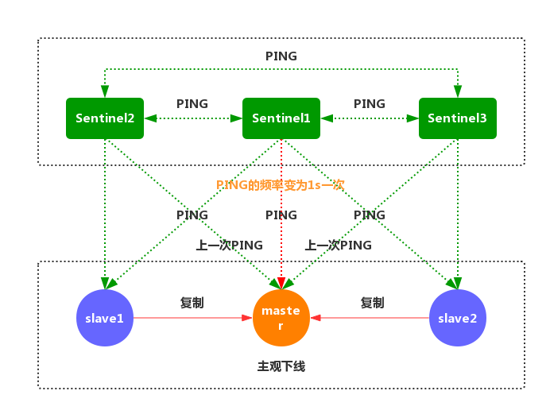

Windows 环境搭建：https://www.cnblogs.com/igeekfan/p/12115033.html
CSRedis 使用：https://www.cnblogs.com/igeekfan/p/12115048.html
入门简介与主从搭建：https://juejin.im/post/5b76e732f265da4376203849
哨兵模式与高可用集群：https://juejin.im/post/5b7d226a6fb9a01a1e01ff64
集群模式搭建与原理详解：https://juejin.im/post/5b8fc5536fb9a05d2d01fb11
数据结构与全局命令概述：https://juejin.im/post/5bb01064e51d453eb93d8028
数据结构之字符串：https://juejin.im/post/5bbc9d03f265da0ab915e3b5
数据结构之哈希：https://juejin.im/post/5bc359ff5188255c7b16ab72
数据结构之列表：https://juejin.im/post/5bcb3b066fb9a05d1c14c712
数据结构之集合：https://juejin.im/post/5be455d75188250e8601b3e0
磁盘持久化机制：https://juejin.im/post/5da14c37e51d45784603adb7
内存回收机制：https://juejin.im/post/5d107ad851882576df7fba9e
{kind=link}
参考：《Redis 开发与运维》
入门简介与主从搭建
前言
Redis 是一种基于 键值对 的 NoSQL 数据库。与很多键值对数据库不同，Redis 提供了丰富的 值数据存储结构，包括 string（字符串）、hash（哈希）、list（列表）、set（集合）、zset（有序集合）、bitmap（位图）等等。
正文
Redis 是一个使用 ANSI C 编写的开源、支持 网络、基于 内存、单线程模型、可选持久性 的 键值对存储数据库。
Redis 的特性
- 速度快，最快可达到 10w QPS（基于 内存，C 语言，单线程 架构）；
- 基于 键值对 (key/value) 的数据结构服务器。全称 Remote Dictionary Server。包括
string（字符串）、hash（哈希）、list（列表）、set（集合）、zset（有序集合）、bitmap（位图）。同时在 字符串 的基础上演变出 位图（BitMaps）和HyperLogLog两种数据结构。3.2 版本中加入GEO（地理信息位置）。 - 丰富的功能。例如：键过期（缓存），发布订阅（消息队列）， Lua 脚本（自己实现 Redis 命令），事务，流水线（Pipeline，用于减少网络开销）。
- 简单稳定。无外部库依赖，单线程模型。
- 客户端语言多。
- 持久化（支持两种 持久化 方式 RDB 和 AOF）。
- 主从复制（分布式的基础）。
- 高可用（Redis Sentinel），分布式（Redis Cluster）和 水平扩容。
Redis 的应用场景
缓存
合理的使用 缓存 能够明显加快访问的速度，同时降低数据源的压力。这也是 Redis 最常用的功能。Redis 提供了 键值过期时间（EXPIRE key seconds）设置，并且也提供了灵活控制 最大内存 和 内存溢出 后的 淘汰策略。
排行榜
每个网站都有自己的排行榜，例如按照 热度排名 的排行榜，发布时间 的排行榜，答题排行榜 等等。Redis 提供了 列表（list）和 有序集合（zset）数据结构，合理的使用这些数据结构，可以很方便的构建各种排行榜系统。
计数器
计数器 在网站应用中非常重要。例如：点赞数加 1，浏览数 加 1。还有常用的 限流操作，限制每个用户每秒 访问系统的次数 等等。Redis 支持 计数功能（INCR key），而且计数的 性能 也非常好，计数的同时也可以设置 超时时间，这样就可以 实现限流。
社交网络
赞/踩，粉丝，共同好友/喜好，推送，下拉刷新等是社交网站必备的功能。由于社交网站 访问量通常比较大，而且 传统的数据库 不太适合保存这类数据，Redis 提供的 数据结构 可以相对比较容易实现这些功能。
消息队列
Redis 提供的 发布订阅（PUB/SUB）和 阻塞队列 的功能，虽然和专业的消息队列比，还 不够强大，但对于一般的消息队列功能基本满足。
Redis 的安装配置
下面介绍一下 Redis 的安装流程。我会按照如下的顺序，逐步搭建出 高可用 的 Redis 缓存服务器集群。
- Redis 单机服务器 搭建
- Redis 主从复制 搭建
- Redis-Sentinel 高可用 搭建
Redis 单机服务器安装
下载并解压
首先从 Redis 官网下载 Redis 源代码并解压，这里使用的是 最新稳定版本 4.0.11。依次执行如下命令：
1 | cd /usr/local/ |
编译并安装
下载并解压完毕后，则对 源码包 进行 编译安装，这里 Redis 安装路径为 /usr/local/redis。
注意：make install PREFIX=目标安装路径
1 | cd /usr/local/redis-4.0.11 |
安装完成时，/usr/local/redis/bin 目录下会生成的几个可执行的文件。
| 可执行文件 | 作用 |
|---|---|
| redis-server | 启动 redis 服务 |
| redis-cli redis | 命令行客户端 |
| redis-benchmark | redis 基准测试工具 |
| redis-check-aof | redis AOF 持久化文件检测和修复工具 |
| redis-check-dump | redis RDB 持久化文件检测和修复工具 |
| redis-sentinel | 启动 redis sentinel |
复制 Redis 相关命令到 /usr/local/bin 目录下，这样就可以直接执行这些命令，不用写全路径。
1 | cd /usr/local/redis/bin/ |
修改 Redis 配置文件
安装完成之后将 Redis 配置文件拷贝到 /usr/local 下，redis.conf 是 Redis 的配置文件，redis.conf 在 Redis 源码目录，port 默认是 6379。
1 | sudo cp /usr/local/redis-4.0.11/redis.conf /usr/local/ |
Redis 配置文件主要参数解析参考：
1 | # redis 进程是否以守护进程的方式运行，yes 为是，no 为否(不以守护进程的方式运行会占用一个终端)。 |
设置后台启动
由于 Redis 默认是 前台启动，不建议使用。修改 Redis 配置文件，把daemonize no改为daemonize yes。1
daemonize yes
设置远程访问
Redis 默认只允许 本机访问，把bind修改为bind 0.0.0.0此设置会变成 允许所有远程访问。如果想指定限制访问，可设置对应的 IP。1
bind 0.0.0.0
配置 Redis 日志记录
找到logfile配置，默认是：logfile ""，改为自定义日志文件路径。1
logfile /var/log/redis_6379.log
设置 Redis 请求密码
把requirepass修改为 123456，修改之后重启下服务1
requirepass "123456"
有了密码之后，进入客户端，就得这样访问：
1 | redis-cli -h 127.0.0.1 -p 6379 -a 123456 |
Redis 的常用命令
启动命令
1
redis-server /usr/local/redis.conf
关闭命令
1
redis-cli -h 127.0.0.1 -p 6379 shutdown
查看是否启动
1
ps -ef | grep redis
进入客户端
1
redis-cli
关闭客户端
1
redis-cli shutdown
注意：不建议使用
kill -9，这种方式不但不会做持久化操作，还会造成缓冲区等资源不能优雅关闭。极端情况下造成 AOF 和 复制丢失数据 的情况。shutdown还有一个参数，代表是否在关闭 redis 前，生成 持久化文件，命令为redis-cli shutdown nosave|save。
设置为开机自动启动
1
echo "redis-server /usr/local/redis.conf" >> /etc/rc.local
开放防火墙端口
1
2
3
4
5
6# 添加规则
iptables -I INPUT -p tcp -m tcp --dport 6379 -j ACCEPT
# 保存规则
service iptables save
# 重启 iptables
service iptables restart
注册 Redis 为系统服务
在 /etc/init.d 目录下添加 Redis 服务的 启动，暂停 和 重启 脚本：
1 | sudo /etc/init.d/redis |
脚本的内容如下：
1 |
|
赋予脚本文件可执行权限：
1 | chmod 755 /etc/init.d/redis |
启动、停止和重启 redis 服务：
1 | service redis start |
Redis 主从复制集群安装
Redis-Server 配置说明
| 角色 | IP地址 | 端口号 |
|---|---|---|
| Redis Master | 10.206.20.231 | 16379 |
| Redis Slave | 10.206.20.231 | 26379 |
Redis 主从架构配置
编辑 从机 的 Redis 配置文件，找到 210 行（大概）-
#slaveof <masterip> <masterport>。去掉该注释，填写 主服务器 的 IP 和 端口。1
slaveof 10.206.20.231 16379
如果 主服务器 设置了密码，还需要找到
masterauth <master-password>这一行，去掉注释，改为masterauth的主机密码。1
masterauth 123456
配置完成后重启 从服务器 的 Redis 服务。
1
service redis restart
重启完成之后，进入 主服务器 的 redis-cli 模式下，命令为
redis-cli -h 127.0.0.1 -p 16379 -a 123456。输入INFO replication查询到 当前主机 的 Redis 的状态，连接上 主服务器 的 从服务器。
Redis 主服务器 的配置文件：
- redis.conf
1
2
3
4
5
6
7
8
9
10
11daemonize yes
pidfile /var/run/redis-16379.pid
logfile /var/log/redis/redis-16379.log
port 16379
bind 0.0.0.0
timeout 300
databases 16
dbfilename dump-16379.db
dir ./redis-workdir
masterauth 123456
requirepass 123456
Redis 从服务器 的配置文件：
- redis.conf
1
2
3
4
5
6
7
8
9
10
11
12daemonize yes
pidfile /var/run/redis-26379.pid
logfile /var/log/redis/redis-26379.log
port 26379
bind 0.0.0.0
timeout 300
databases 16
dbfilename dump-26379.db
dir ./redis-workdir
masterauth 123456
requirepass 123456
slaveof 127.0.0.1 16379
Redis 主服务器 的状态如下：
1 | # Replication |
Redis 从服务器 的状态如下：
1 | # Replication |
Redis 主从配置验证
上面完成了基本的 主从配置，可以简单的测试一下效果：
进入 主服务器 的 redis-cli 模式，然后
set一个值，比如：1
2set master_port "16379"
OK切换进入 从服务器 的 redis-cli 的模式，查询刚刚设置的值看是否存在：
1
2get master_port
"16379"
此时，我们可以发现是可以获取到值的，Redis 的 主从模式 正常工作。
小结
本文简单的说明了 Redis 的相关 特性 和 应用场景，详细地给出 Redis 单服务器的 编译，安装，配置 和 启动，进一步引入了 Redis 主从复制 的相关原理和详细配置。关于 Redis 的 高可用机制 和 集群搭建，下文将给出详细的说明。
哨兵模式与高可用集群
前言
Redis 的 主从复制 模式下，一旦 主节点 由于故障不能提供服务，需要手动将 从节点 晋升为 主节点，同时还要通知 客户端 更新 主节点地址，这种故障处理方式从一定程度上是无法接受的。Redis 2.8 以后提供了 Redis Sentinel 哨兵机制 来解决这个问题。
正文
Redis 高可用概述
在 Web 服务器中，高可用 是指服务器可以 正常访问 的时间，衡量的标准是在 多长时间 内可以提供正常服务（99.9%、99.99%、99.999% 等等）。在 Redis 层面，高可用 的含义要宽泛一些，除了保证提供 正常服务（如 主从分离、快速容灾技术 等），还需要考虑 数据容量扩展、数据安全 等等。
在 Redis 中，实现 高可用 的技术主要包括 持久化、复制、哨兵 和 集群，下面简单说明它们的作用，以及解决了什么样的问题：
- 持久化：持久化是 最简单的 高可用方法。它的主要作用是 数据备份，即将数据存储在 硬盘，保证数据不会因进程退出而丢失。
- 复制：复制是高可用 Redis 的基础，哨兵 和 集群 都是在 复制基础 上实现高可用的。复制主要实现了数据的多机备份以及对于读操作的负载均衡和简单的故障恢复。缺陷是故障恢复无法自动化、写操作无法负载均衡、存储能力受到单机的限制。
- 哨兵：在复制的基础上，哨兵实现了 自动化 的 故障恢复。缺陷是 写操作 无法 负载均衡，存储能力 受到 单机 的限制。
- 集群：通过集群，Redis 解决了 写操作 无法 负载均衡 以及 存储能力 受到 单机限制 的问题，实现了较为 完善 的 高可用方案。
Redis Sentinel 的基本概念
Redis Sentinel 是 Redis 高可用 的实现方案。Sentinel 是一个管理多个 Redis 实例的工具，它可以实现对 Redis 的 监控、通知、自动故障转移。下面先对 Redis Sentinel 的 基本概念 进行简单的介绍。
基本名词说明：
| 基本名词 | 逻辑结构 | 物理结构 |
|---|---|---|
| Redis 数据节点 | 主节点和从节点 | 主节点和从节点的进程 |
| 主节点（master） | Redis 主数据库 | 一个独立的 Redis 进程 |
| 从节点（slave） | Redis 从数据库 | 一个独立的 Redis 进程 |
| Sentinel 节点 | 监控 Redis 数据节点 | 一个独立的 Sentinel 进程 |
| Sentinel 节点集合 | 若干 Sentinel 节点的抽象组合 | 若干 Sentinel 节点进程 |
| Redis Sentinel | Redis 高可用实现方案 | Sentinel 节点集合和 Redis 数据节点进程 |
| 应用客户端 | 泛指一个或多个客户端 | 一个或者多个客户端进程或者线程 |
如图所示，Redis 的 主从复制模式 和 Sentinel 高可用架构 的示意图：
{kind=link}
Redis 主从复制的问题
Redis 主从复制 可将 主节点 数据同步给 从节点，从节点此时有两个作用：
- 一旦 主节点宕机，从节点 作为 主节点 的 备份 可以随时顶上来。
- 扩展 主节点 的 读能力，分担主节点读压力。
{kind=link}
主从复制 同时存在以下几个问题：
- 一旦 主节点宕机，从节点 晋升成 主节点，同时需要修改 应用方 的 主节点地址，还需要命令所有 从节点 去 复制 新的主节点，整个过程需要 人工干预。
- 主节点 的 写能力 受到 单机的限制。
- 主节点 的 存储能力 受到 单机的限制。
- 原生复制 的弊端在早期的版本中也会比较突出，比如：Redis 复制中断 后，从节点 会发起
psync。此时如果 同步不成功，则会进行 全量同步，主库 执行 全量备份 的同时，可能会造成毫秒或秒级的 卡顿。
Redis Sentinel 深入探究
Redis Sentinel 的架构

Redis Sentinel 的主要功能
Sentinel 的主要功能包括 主节点存活检测、主从运行情况检测、自动故障转移 （failover）、主从切换。Redis 的 Sentinel 最小配置是 一主一从。
Redis 的 Sentinel 系统可以用来管理多个 Redis 服务器，该系统可以执行以下四个任务：
- 监控
Sentinel 会不断的检查 主服务器 和 从服务器 是否正常运行。 - 通知
当被监控的某个 Redis 服务器出现问题，Sentinel 通过 API 脚本 向 管理员 或者其他的 应用程序 发送通知。 - 自动故障转移
当 主节点 不能正常工作时，Sentinel 会开始一次 自动的 故障转移操作，它会将与 失效主节点 是 主从关系 的其中一个 从节点 升级为新的 主节点，并且将其他的 从节点 指向 新的主节点。 - 配置提供者
在 Redis Sentinel 模式下，客户端应用 在初始化时连接的是 Sentinel 节点集合，从中获取 主节点 的信息。
主观下线和客观下线
默认情况下，每个 Sentinel 节点会以 每秒一次 的频率对 Redis 节点和 其它 的 Sentinel 节点发送 PING 命令，并通过节点的 回复 来判断节点是否在线。
- 主观下线
主观下线 适用于所有 主节点 和 从节点。如果在down-after-milliseconds毫秒内，Sentinel 没有收到 目标节点 的有效回复，则会判定 该节点 为 主观下线。 - 客观下线
客观下线 只适用于 主节点。如果 主节点 出现故障，Sentinel 节点会通过sentinel is-master-down-by-addr命令，向其它 Sentinel 节点询问对该节点的 状态判断。如果超过<quorum>个数的节点判定 主节点 不可达，则该 Sentinel 节点会判断 主节点 为 客观下线。
Sentinel 的通信命令
Sentinel 节点连接一个 Redis 实例的时候，会创建 cmd 和 pub/sub 两个 连接。Sentinel 通过 cmd 连接给 Redis 发送命令，通过 pub/sub 连接到 Redis 实例上的其他 Sentinel 实例。
Sentinel 与 Redis 主节点 和 从节点 交互的命令，主要包括：
| 命令 | 作 用 |
|---|---|
PING |
Sentinel 向 Redis 节点发送 PING 命令，检查节点的状态 |
INFO |
Sentinel 向 Redis 节点发送 INFO 命令，获取它的 从节点信息 |
PUBLISH |
Sentinel 向其监控的 Redis 节点 __sentinel__:hello 这个 channel 发布 自己的信息 及 主节点 相关的配置 |
SUBSCRIBE |
Sentinel 通过订阅 Redis 主节点 和 从节点 的 __sentinel__:hello 这个 channnel，获取正在监控相同服务的其他 Sentinel 节点 |
Sentinel 与 Sentinel 交互的命令，主要包括：
| 命令 | 作 用 |
|---|---|
PING |
Sentinel 向其他 Sentinel 节点发送 PING 命令，检查节点的状态 |
SENTINEL:is-master-down-by-addr |
和其他 Sentinel 协商 主节点 的状态，如果 主节点 处于 SDOWN 状态，则投票自动选出新的 主节点 |
Redis Sentinel 的工作原理
每个 Sentinel 节点都需要 定期执行 以下任务：
每个 Sentinel 以 每秒钟 一次的频率，向它所知的 主服务器、从服务器 以及其他 Sentinel 实例 发送一个
PING命令。
如果一个 实例（instance）距离 最后一次 有效回复
PING命令的时间超过down-after-milliseconds所指定的值，那么这个实例会被 Sentinel 标记为 主观下线。如果一个 主服务器 被标记为 主观下线，那么正在 监视 这个 主服务器 的所有 Sentinel 节点，要以 每秒一次 的频率确认 主服务器 的确进入了 主观下线 状态。
 如果一个 主服务器 被标记为 主观下线，并且有 足够数量 的 Sentinel（至少要达到 配置文件 指定的数量）在指定的 时间范围 内同意这一判断，那么这个 主服务器 被标记为 客观下线。
在一般情况下， 每个 Sentinel 会以每 10 秒一次的频率，向它已知的所有 主服务器 和 从服务器 发送 INFO 命令。当一个 主服务器 被 Sentinel 标记为 客观下线 时，Sentinel 向 下线主服务器 的所有 从服务器 发送
INFO命令的频率，会从 10 秒一次改为 每秒一次。Sentinel 和其他 Sentinel 协商 主节点 的状态，如果 主节点 处于 SDOWN 状态，则投票自动选出新的 主节点。将剩余的 从节点 指向 新的主节点 进行 数据复制。
当没有足够数量的 Sentinel 同意 主服务器 下线时， 主服务器 的 客观下线状态 就会被移除。当 主服务器 重新向 Sentinel 的
PING命令返回 有效回复 时，主服务器 的 主观下线状态 就会被移除。
{kind=link}
{kind=link}
{kind=link}
{kind=link}
{kind=link}
{kind=link}
注意：一个有效的 PING 回复可以是：
+PONG、-LOADING或者-MASTERDOWN。如果 服务器 返回除以上三种回复之外的其他回复，又或者在 指定时间 内没有回复PING命令， 那么 Sentinel 认为服务器返回的回复 无效（non-valid）。
Redis Sentinel 搭建
Redis Sentinel 的部署须知
- 一个稳健的 Redis Sentinel 集群，应该使用至少 三个 Sentinel 实例，并且保证讲这些实例放到 不同的机器 上，甚至不同的 物理区域。
- Sentinel 无法保证 强一致性。
- 常见的 客户端应用库 都支持 Sentinel。
- Sentinel 需要通过不断的 测试 和 观察，才能保证高可用。
Redis Sentinel 的配置文件
1 | # 哨兵 sentinel 实例运行的端口，默认 26379 |
Redis Sentinel 的节点规划
| 角色 | IP地址 | 端口号 |
|---|---|---|
| Redis Master | 10.206.20.231 | 16379 |
| Redis Slave1 | 10.206.20.231 | 26379 |
| Redis Slave2 | 10.206.20.231 | 36379 |
| Redis Sentinel1 | 10.206.20.231 | 16380 |
| Redis Sentinel2 | 10.206.20.231 | 26380 |
| Redis Sentinel3 | 10.206.20.231 | 36380 |
Redis Sentinel 的配置搭建
Redis-Server 的配置管理
分别拷贝三份 redis.conf 文件到 /usr/local/redis-sentinel 目录下面。三个配置文件分别对应 master、slave1 和 slave2 三个 Redis 节点的 启动配置。
1 | sudo cp /usr/local/redis-4.0.11/redis.conf /usr/local/redis-sentinel/redis-16379.conf |
分别修改三份配置文件如下：
主节点：redis-16379.conf
1
2
3
4
5
6
7
8
9
10
11daemonize yes
pidfile /var/run/redis-16379.pid
logfile /var/log/redis/redis-16379.log
port 16379
bind 0.0.0.0
timeout 300
databases 16
dbfilename dump-16379.db
dir ./redis-workdir
masterauth 123456
requirepass 123456从节点1：redis-26379.conf
1
2
3
4
5
6
7
8
9
10
11
12daemonize yes
pidfile /var/run/redis-26379.pid
logfile /var/log/redis/redis-26379.log
port 26379
bind 0.0.0.0
timeout 300
databases 16
dbfilename dump-26379.db
dir ./redis-workdir
masterauth 123456
requirepass 123456
slaveof 127.0.0.1 16379从节点2：redis-36379.conf
1
2
3
4
5
6
7
8
9
10
11
12daemonize yes
pidfile /var/run/redis-36379.pid
logfile /var/log/redis/redis-36379.log
port 36379
bind 0.0.0.0
timeout 300
databases 16
dbfilename dump-36379.db
dir ./redis-workdir
masterauth 123456
requirepass 123456
slaveof 127.0.0.1 16379
如果要做 自动故障转移，建议所有的
redis.conf都设置masterauth。因为 自动故障 只会重写 主从关系，即slaveof，不会自动写入masterauth。如果 Redis 原本没有设置密码，则可以忽略。
Redis-Server 启动验证
按顺序分别启动 16379，26379 和 36379 三个 Redis 节点，启动命令和启动日志如下：
Redis 的启动命令：
1 | sudo redis-server /usr/local/redis-sentinel/redis-16379.conf |
查看 Redis 的启动进程：
1 | ps -ef | grep redis-server |
查看 Redis 的启动日志：
- 节点 redis-16379
1
2
3
4
5
6
7
8
9
10
11
12
13
14
15
16
17
18
19
20
21
22cat /var/log/redis/redis-16379.log
7126:C 22 Aug 14:16:38.907 # oO0OoO0OoO0Oo Redis is starting oO0OoO0OoO0Oo
7126:C 22 Aug 14:16:38.908 # Redis version=4.0.11, bits=64, commit=00000000, modified=0, pid=7126, just started
7126:C 22 Aug 14:16:38.908 # Configuration loaded
7127:M 22 Aug 14:16:38.910 * Increased maximum number of open files to 10032 (it was originally set to 256).
7127:M 22 Aug 14:16:38.912 * Running mode=standalone, port=16379.
7127:M 22 Aug 14:16:38.913 # Server initialized
7127:M 22 Aug 14:16:38.913 * Ready to accept connections
7127:M 22 Aug 14:16:48.416 * Slave 127.0.0.1:26379 asks for synchronization
7127:M 22 Aug 14:16:48.416 * Full resync requested by slave 127.0.0.1:26379
7127:M 22 Aug 14:16:48.416 * Starting BGSAVE for SYNC with target: disk
7127:M 22 Aug 14:16:48.416 * Background saving started by pid 7134
7134:C 22 Aug 14:16:48.433 * DB saved on disk
7127:M 22 Aug 14:16:48.487 * Background saving terminated with success
7127:M 22 Aug 14:16:48.494 * Synchronization with slave 127.0.0.1:26379 succeeded
7127:M 22 Aug 14:16:51.848 * Slave 127.0.0.1:36379 asks for synchronization
7127:M 22 Aug 14:16:51.849 * Full resync requested by slave 127.0.0.1:36379
7127:M 22 Aug 14:16:51.849 * Starting BGSAVE for SYNC with target: disk
7127:M 22 Aug 14:16:51.850 * Background saving started by pid 7138
7138:C 22 Aug 14:16:51.862 * DB saved on disk
7127:M 22 Aug 14:16:51.919 * Background saving terminated with success
7127:M 22 Aug 14:16:51.923 * Synchronization with slave 127.0.0.1:36379 succeeded
以下两行日志日志表明，redis-16379 作为 Redis 的 主节点，redis-26379 和 redis-36379 作为 从节点，从 主节点 同步数据。
1 | 7127:M 22 Aug 14:16:48.416 * Slave 127.0.0.1:26379 asks for synchronization |
节点 redis-26379
1
2
3
4
5
6
7
8
9
10
11
12
13
14
15
16
17
18cat /var/log/redis/redis-26379.log
7132:C 22 Aug 14:16:48.407 # oO0OoO0OoO0Oo Redis is starting oO0OoO0OoO0Oo
7132:C 22 Aug 14:16:48.408 # Redis version=4.0.11, bits=64, commit=00000000, modified=0, pid=7132, just started
7132:C 22 Aug 14:16:48.408 # Configuration loaded
7133:S 22 Aug 14:16:48.410 * Increased maximum number of open files to 10032 (it was originally set to 256).
7133:S 22 Aug 14:16:48.412 * Running mode=standalone, port=26379.
7133:S 22 Aug 14:16:48.413 # Server initialized
7133:S 22 Aug 14:16:48.413 * Ready to accept connections
7133:S 22 Aug 14:16:48.413 * Connecting to MASTER 127.0.0.1:16379
7133:S 22 Aug 14:16:48.413 * MASTER <-> SLAVE sync started
7133:S 22 Aug 14:16:48.414 * Non blocking connect for SYNC fired the event.
7133:S 22 Aug 14:16:48.414 * Master replied to PING, replication can continue...
7133:S 22 Aug 14:16:48.415 * Partial resynchronization not possible (no cached master)
7133:S 22 Aug 14:16:48.417 * Full resync from master: 211d3b4eceaa3af4fe5c77d22adf06e1218e0e7b:0
7133:S 22 Aug 14:16:48.494 * MASTER <-> SLAVE sync: receiving 176 bytes from master
7133:S 22 Aug 14:16:48.495 * MASTER <-> SLAVE sync: Flushing old data
7133:S 22 Aug 14:16:48.496 * MASTER <-> SLAVE sync: Loading DB in memory
7133:S 22 Aug 14:16:48.498 * MASTER <-> SLAVE sync: Finished with success节点 redis-36379
1
2
3
4
5
6
7
8
9
10
11
12
13
14
15
16
17
18cat /var/log/redis/redis-36379.log
7136:C 22 Aug 14:16:51.839 # oO0OoO0OoO0Oo Redis is starting oO0OoO0OoO0Oo
7136:C 22 Aug 14:16:51.840 # Redis version=4.0.11, bits=64, commit=00000000, modified=0, pid=7136, just started
7136:C 22 Aug 14:16:51.841 # Configuration loaded
7137:S 22 Aug 14:16:51.843 * Increased maximum number of open files to 10032 (it was originally set to 256).
7137:S 22 Aug 14:16:51.845 * Running mode=standalone, port=36379.
7137:S 22 Aug 14:16:51.845 # Server initialized
7137:S 22 Aug 14:16:51.846 * Ready to accept connections
7137:S 22 Aug 14:16:51.846 * Connecting to MASTER 127.0.0.1:16379
7137:S 22 Aug 14:16:51.847 * MASTER <-> SLAVE sync started
7137:S 22 Aug 14:16:51.847 * Non blocking connect for SYNC fired the event.
7137:S 22 Aug 14:16:51.847 * Master replied to PING, replication can continue...
7137:S 22 Aug 14:16:51.848 * Partial resynchronization not possible (no cached master)
7137:S 22 Aug 14:16:51.850 * Full resync from master: 211d3b4eceaa3af4fe5c77d22adf06e1218e0e7b:14
7137:S 22 Aug 14:16:51.923 * MASTER <-> SLAVE sync: receiving 176 bytes from master
7137:S 22 Aug 14:16:51.923 * MASTER <-> SLAVE sync: Flushing old data
7137:S 22 Aug 14:16:51.924 * MASTER <-> SLAVE sync: Loading DB in memory
7137:S 22 Aug 14:16:51.927 * MASTER <-> SLAVE sync: Finished with success
Sentinel 的配置管理
分别拷贝三份 redis-sentinel.conf 文件到 /usr/local/redis-sentinel 目录下面。三个配置文件分别对应 master、slave1 和 slave2 三个 Redis 节点的 哨兵配置。
1 | sudo cp /usr/local/redis-4.0.11/sentinel.conf /usr/local/redis-sentinel/sentinel-16380.conf |
节点1：sentinel-16380.conf
1
2
3
4
5
6
7
8
9
10protected-mode no
bind 0.0.0.0
port 16380
daemonize yes
sentinel monitor master 127.0.0.1 16379 2
sentinel down-after-milliseconds master 5000
sentinel failover-timeout master 180000
sentinel parallel-syncs master 1
sentinel auth-pass master 123456
logfile /var/log/redis/sentinel-16380.log节点2：sentinel-26380.conf
1
2
3
4
5
6
7
8
9
10protected-mode no
bind 0.0.0.0
port 26380
daemonize yes
sentinel monitor master 127.0.0.1 16379 2
sentinel down-after-milliseconds master 5000
sentinel failover-timeout master 180000
sentinel parallel-syncs master 1
sentinel auth-pass master 123456
logfile /var/log/redis/sentinel-26380.log节点3：sentinel-36380.conf
1
2
3
4
5
6
7
8
9
10protected-mode no
bind 0.0.0.0
port 36380
daemonize yes
sentinel monitor master 127.0.0.1 16379 2
sentinel down-after-milliseconds master 5000
sentinel failover-timeout master 180000
sentinel parallel-syncs master 1
sentinel auth-pass master 123456
logfile /var/log/redis/sentinel-36380.log
Sentinel 启动验证
按顺序分别启动 16380，26380 和 36380 三个 Sentinel 节点，启动命令和启动日志如下：
1 | sudo redis-sentinel /usr/local/redis-sentinel/sentinel-16380.conf |
查看 Sentinel 的启动进程：
1 | ps -ef | grep redis-sentinel |
查看 Sentinel 的启动日志：
- 节点 sentinel-16380
1
2
3
4
5
6
7
8
9
10cat /var/log/redis/sentinel-16380.log
7953:X 22 Aug 15:30:27.245 # oO0OoO0OoO0Oo Redis is starting oO0OoO0OoO0Oo
7953:X 22 Aug 15:30:27.245 # Redis version=4.0.11, bits=64, commit=00000000, modified=0, pid=7953, just started
7953:X 22 Aug 15:30:27.245 # Configuration loaded
7954:X 22 Aug 15:30:27.247 * Increased maximum number of open files to 10032 (it was originally set to 256).
7954:X 22 Aug 15:30:27.249 * Running mode=sentinel, port=16380.
7954:X 22 Aug 15:30:27.250 # Sentinel ID is 69d05b86a82102a8919231fd3c2d1f21ce86e000
7954:X 22 Aug 15:30:27.250 # +monitor master master 127.0.0.1 16379 quorum 2
7954:X 22 Aug 15:30:32.286 # +sdown sentinel fd166dc66425dc1d9e2670e1f17cb94fe05f5fc7 127.0.0.1 36380 @ master 127.0.0.1 16379
7954:X 22 Aug 15:30:34.588 # -sdown sentinel fd166dc66425dc1d9e2670e1f17cb94fe05f5fc7 127.0.0.1 36380 @ master 127.0.0.1 16379
sentinel-16380 节点的 Sentinel ID 为 69d05b86a82102a8919231fd3c2d1f21ce86e000，并通过 Sentinel ID 把自身加入 sentinel 集群中。
- 节点 sentinel-26380
1
2
3
4
5
6
7
8
9
10
11cat /var/log/redis/sentinel-26380.log
7956:X 22 Aug 15:30:30.900 # oO0OoO0OoO0Oo Redis is starting oO0OoO0OoO0Oo
7956:X 22 Aug 15:30:30.901 # Redis version=4.0.11, bits=64, commit=00000000, modified=0, pid=7956, just started
7956:X 22 Aug 15:30:30.901 # Configuration loaded
7957:X 22 Aug 15:30:30.904 * Increased maximum number of open files to 10032 (it was originally set to 256).
7957:X 22 Aug 15:30:30.905 * Running mode=sentinel, port=26380.
7957:X 22 Aug 15:30:30.906 # Sentinel ID is 21e30244cda6a3d3f55200bcd904d0877574e506
7957:X 22 Aug 15:30:30.906 # +monitor master master 127.0.0.1 16379 quorum 2
7957:X 22 Aug 15:30:30.907 * +slave slave 127.0.0.1:26379 127.0.0.1 26379 @ master 127.0.0.1 16379
7957:X 22 Aug 15:30:30.911 * +slave slave 127.0.0.1:36379 127.0.0.1 36379 @ master 127.0.0.1 16379
7957:X 22 Aug 15:30:36.311 * +sentinel sentinel fd166dc66425dc1d9e2670e1f17cb94fe05f5fc7 127.0.0.1 36380 @ master 127.0.0.1 16379
sentinel-26380 节点的 Sentinel ID 为 21e30244cda6a3d3f55200bcd904d0877574e506，并通过 Sentinel ID 把自身加入 sentinel 集群中。此时 sentinel 集群中已有 sentinel-16380 和 sentinel-26380 两个节点。
- 节点 sentinel-36380
1
2
3
4
5
6
7
8
9
10
11cat /var/log/redis/sentinel-36380.log
7959:X 22 Aug 15:30:34.273 # oO0OoO0OoO0Oo Redis is starting oO0OoO0OoO0Oo
7959:X 22 Aug 15:30:34.274 # Redis version=4.0.11, bits=64, commit=00000000, modified=0, pid=7959, just started
7959:X 22 Aug 15:30:34.274 # Configuration loaded
7960:X 22 Aug 15:30:34.276 * Increased maximum number of open files to 10032 (it was originally set to 256).
7960:X 22 Aug 15:30:34.277 * Running mode=sentinel, port=36380.
7960:X 22 Aug 15:30:34.278 # Sentinel ID is fd166dc66425dc1d9e2670e1f17cb94fe05f5fc7
7960:X 22 Aug 15:30:34.278 # +monitor master master 127.0.0.1 16379 quorum 2
7960:X 22 Aug 15:30:34.279 * +slave slave 127.0.0.1:26379 127.0.0.1 26379 @ master 127.0.0.1 16379
7960:X 22 Aug 15:30:34.283 * +slave slave 127.0.0.1:36379 127.0.0.1 36379 @ master 127.0.0.1 16379
7960:X 22 Aug 15:30:34.993 * +sentinel sentinel 21e30244cda6a3d3f55200bcd904d0877574e506 127.0.0.1 26380 @ master 127.0.0.1 16379
sentinel-36380 节点的 Sentinel ID 为 fd166dc66425dc1d9e2670e1f17cb94fe05f5fc7，并通过 Sentinel ID 把自身加入 sentinel 集群中。此时 sentinel 集群中已有 sentinel-16380，sentinel-26380 和 sentinel-36380 三个节点。
Sentinel 配置刷新
- 节点1：sentinel-16380.conf
sentinel-16380.conf 文件新生成如下的配置项：
1 | # Generated by CONFIG REWRITE |
可以注意到，sentinel-16380.conf 刷新写入了 Redis 主节点关联的所有 从节点 redis-26379 和 redis-36379，同时写入了其余两个 Sentinel 节点 sentinel-26380 和 sentinel-36380 的 IP 地址，端口号 和 Sentinel ID。
1 | # Generated by CONFIG REWRITE |
可以注意到，sentinel-26380.conf 刷新写入了 Redis 主节点关联的所有 从节点 redis-26379 和 redis-36379，同时写入了其余两个 Sentinel 节点 sentinel-36380 和 sentinel-16380 的 IP 地址，端口号 和 Sentinel ID。
1 | # Generated by CONFIG REWRITE |
可以注意到，sentinel-36380.conf 刷新写入了 Redis 主节点关联的所有 从节点 redis-26379 和 redis-36379，同时写入了其余两个 Sentinel 节点 sentinel-16380 和 sentinel-26380 的 IP 地址，端口号 和 Sentinel ID。
Sentinel 时客户端命令
检查其他 Sentinel 节点的状态，返回
PONG为正常。1
PING sentinel
显示被监控的所有 主节点 以及它们的状态。
1
SENTINEL masters
显示指定 主节点 的信息和状态。
1
SENTINEL master <master_name>
显示指定 主节点 的所有 从节点 以及它们的状态。
1
SENTINEL slaves <master_name>
返回指定 主节点 的 IP 地址和 端口。如果正在进行
failover或者failover已经完成，将会显示被提升为 主节点 的 从节点 的 IP 地址和 端口。1
SENTINEL get-master-addr-by-name <master_name>
重置名字匹配该 正则表达式 的所有的 主节点 的状态信息，清除它之前的 状态信息，以及 从节点 的信息。
1
SENTINEL reset <pattern>
强制当前 Sentinel 节点执行
failover，并且不需要得到其他 Sentinel 节点的同意。但是failover后会将 最新的配置 发送给其他 Sentinel 节点。1
SENTINEL failover <master_name>
Redis Sentinel 故障切换与恢复
Redis CLI 客户端跟踪
上面的日志显示，redis-16379 节点为 主节点，它的进程 ID 为 7127。为了模拟 Redis 主节点故障，强制杀掉这个进程。
1 | kill -9 7127 |
使用 redis-cli 客户端命令进入 sentinel-16380 节点，查看 Redis 节点 的状态信息。
1 | redis-cli -p 16380 |
- 查看 Redis 主从集群的 主节点 信息。可以发现 redis-26379 晋升为 新的主节点。
1 | 127.0.0.1:16380> SENTINEL master master |
Redis Sentinel 日志跟踪
查看任意 Sentinel 节点的日志如下：
1 | 7954:X 22 Aug 18:40:22.504 # +tilt #tilt mode entered |
分析日志，可以发现 redis-16329 节点先进入 sdown 主观下线 状态。
1
+sdown master master 127.0.0.1 16379
哨兵检测到 redis-16329 出现故障，Sentinel 进入一个 新纪元，从 0 变为 1。
1
+new-epoch 1
三个 Sentinel 节点开始协商 主节点 的状态，判断其是否需要 客观下线。
1
+vote-for-leader fd166dc66425dc1d9e2670e1f17cb94fe05f5fc7 1
超过 quorum 个数的 Sentinel 节点认为 主节点 出现故障，redis-16329 节点进入 客观下线 状态。
1
+odown master master 127.0.0.1 16379 #quorum 3/2
Sentinal 进行 自动故障切换，协商选定 redis-26329 节点作为新的 主节点。
1
+switch-master master 127.0.0.1 16379 127.0.0.1 26379
redis-36329 节点和已经 客观下线 的 redis-16329 节点成为 redis-26479 的 从节点。
1
27954:X 22 Aug 18:48:25.710 * +slave slave 127.0.0.1:36379 127.0.0.1 36379 @ master 127.0.0.1 26379
7954:X 22 Aug 18:48:25.711 * +slave slave 127.0.0.1:16379 127.0.0.1 16379 @ master 127.0.0.1 26379
Redis 的配置文件
分别查看三个 redis 节点的配置文件，发生 主从切换 时 redis.conf 的配置会自动发生刷新。
节点 redis-16379
1
2
3
4
5
6
7
8
9
10
11daemonize yes
pidfile "/var/run/redis-16379.pid"
logfile "/var/log/redis/redis-16379.log"
port 16379
bind 0.0.0.0
timeout 300
databases 16
dbfilename "dump-16379.db"
dir "/usr/local/redis-sentinel/redis-workdir"
masterauth "123456"
requirepass "123456"节点 redis-26379
1
2
3
4
5
6
7
8
9
10
11daemonize yes
pidfile "/var/run/redis-26379.pid"
logfile "/var/log/redis/redis-26379.log"
port 26379
bind 0.0.0.0
timeout 300
databases 16
dbfilename "dump-26379.db"
dir "/usr/local/redis-sentinel/redis-workdir"
masterauth "123456"
requirepass "123456"节点 redis-36379
1
2
3
4
5
6
7
8
9
10
11
12daemonize yes
pidfile "/var/run/redis-36379.pid"
logfile "/var/log/redis/redis-36379.log"
port 36379
bind 0.0.0.0
timeout 300
databases 16
dbfilename "dump-36379.db"
dir "/usr/local/redis-sentinel/redis-workdir"
masterauth "123456"
requirepass "123456"
slaveof 127.0.0.1 26379
分析：redis-26379 节点
slaveof配置被移除，晋升为 主节点。redis-16379 节点处于 宕机状态。redis-36379 的slaveof配置更新为 127.0.0.1 redis-26379，成为 redis-26379 的 从节点。
重启节点 redis-16379。待正常启动后，再次查看它的 redis.conf 文件，配置如下：
1 | daemonize yes |
节点 redis-16379 的配置文件新增一行 slaveof 配置属性，指向 redis-26379，即成为 新的主节点 的 从节点。
小结
本文首先对 Redis 实现高可用的几种模式做出了阐述，指出了 Redis 主从复制 的不足之处，进一步引入了 Redis Sentinel 哨兵模式 的相关概念，深入说明了 Redis Sentinel 的 具体功能，基本原理，高可用搭建 和 自动故障切换 验证等。
当然，Redis Sentinel 仅仅解决了 高可用 的问题，对于 主节点 单点写入和单节点无法扩容等问题，还需要引入 Redis Cluster 集群模式 予以解决。
集群模式搭建与原理详解
前言
在 Redis 3.0 之前，使用 哨兵（sentinel）机制来监控各个节点之间的状态。Redis Cluster 是 Redis 的 分布式解决方案，在 3.0 版本正式推出，有效地解决了 Redis 在 分布式 方面的需求。当遇到 单机内存、并发、流量 等瓶颈时，可以采用 Cluster 架构方案达到 负载均衡 的目的。
本文将从 集群方案、数据分布、搭建集群、节点通信、集群伸缩、请求路由、故障转移、集群运维 等几个方面介绍 Redis Cluster。
正文
Redis 集群方案
Redis Cluster 集群模式通常具有 高可用、可扩展性、分布式、容错 等特性。Redis 分布式方案一般有两种：
1、客户端分区方案
客户端 就已经决定数据会被 存储 到哪个 redis 节点或者从哪个 redis 节点 读取数据。其主要思想是采用 哈希算法 将 Redis 数据的 key 进行散列，通过 hash 函数，特定的 key 会 映射 到特定的 Redis 节点上。
{kind=link}
客户端分区方案 的代表为 Redis Sharding，Redis Sharding 是 Redis Cluster 出来之前，业界普遍使用的 Redis 多实例集群 方法。Java 的 Redis 客户端驱动库 Jedis，支持 Redis Sharding 功能，即 ShardedJedis 以及 结合缓存池 的 ShardedJedisPool。
- 优点
不使用 第三方中间件，分区逻辑 可控，配置 简单，节点之间无关联，容易 线性扩展，灵活性强。 - 缺点
客户端 无法 动态增删 服务节点，客户端需要自行维护 分发逻辑，客户端之间 无连接共享，会造成 连接浪费。
2、代理分区方案
客户端 发送请求到一个 代理组件，代理 解析 客户端 的数据，并将请求转发至正确的节点，最后将结果回复给客户端。
{kind=link}
代理分区 主流实现的有方案有 Twemproxy 和 Codis。
（1）Twemproxy
Twemproxy 也叫 nutcraker，是 twitter 开源的一个 redis 和 memcache 的 中间代理服务器 程序。Twemproxy 作为 代理，可接受来自多个程序的访问，按照 路由规则，转发给后台的各个 Redis 服务器，再原路返回。Twemproxy 存在 单点故障 问题，需要结合 Lvs 和 Keepalived 做 高可用方案。
{kind=link}
- 优点：应用范围广，稳定性较高，中间代理层 高可用。
- 缺点：无法平滑地 水平扩容/缩容，无 可视化管理界面，运维不友好，出现故障，不能 自动转移。
（2）Codis
Codis 是一个 分布式 Redis 解决方案，对于上层应用来说，连接 Codis-Proxy 和直接连接 原生的 Redis-Server 没有的区别。Codis 底层会 处理请求的转发，不停机的进行 数据迁移 等工作。Codis 采用了无状态的 代理层，对于 客户端 来说，一切都是透明的。

- 优点
实现了上层 Proxy 和底层 Redis 的 高可用，数据分片 和 自动平衡，提供 命令行接口 和 RESTful API，提供 监控 和 管理 界面，可以动态 添加 和 删除 Redis 节点。 - 缺点
部署架构 和 配置 复杂，不支持 跨机房 和 多租户，不支持 鉴权管理。
查询路由方案
客户端随机地 请求任意一个 Redis 实例，然后由 Redis 将请求 转发 给 正确 的 Redis 节点。Redis Cluster 实现了一种 混合形式 的 查询路由，但并不是 直接 将请求从一个 Redis 节点 转发 到另一个 Redis 节点，而是在 客户端 的帮助下直接 重定向（ redirected）到正确的 Redis 节点。
{kind=link}
- 优点
无中心节点，数据按照 槽 存储分布在多个 Redis 实例上，可以平滑的进行节点 扩容/缩容，支持 高可用 和 自动故障转移，运维成本低。 - 缺点
严重依赖 Redis-trib 工具，缺乏 监控管理，需要依赖 Smart Client (维护连接，缓存路由表，MultiOp 和 Pipeline 支持)。Failover 节点的 检测过慢，不如 中心节点 ZooKeeper 及时。Gossip 消息具有一定开销。无法根据统计区分 冷热数据。
数据分布
数据分布理论
分布式数据库 首先要解决把 整个数据集 按照 分区规则 映射到 多个节点 的问题，即把 数据集 划分到 多个节点 上，每个节点负责 整体数据 的一个 子集。
{kind=link}
数据分布通常有 哈希分区 和 顺序分区 两种方式，对比如下：
| 分区方式 | 特点 | 相关产品 |
|---|---|---|
| 哈希分区 | 离散程度好，数据分布与业务无关，无法顺序访问 | Redis Cluster，Cassandra，Dynamo |
| 顺序分区 | 离散程度易倾斜，数据分布与业务相关，可以顺序访问 | BigTable，HBase，Hypertable |
由于 Redis Cluster 采用 哈希分区规则，这里重点讨论 哈希分区。常见的 哈希分区 规则有几种，下面分别介绍：
1、节点取余分区
使用特定的数据，如 Redis 的 键 或 用户 ID，再根据 节点数量 N 使用公式：hash(key) % N 计算出 哈希值，用来决定数据 映射 到哪一个节点上。
{kind=link}
- 优点
这种方式的突出优点是 简单性，常用于 数据库 的 分库分表规则。一般采用 预分区 的方式，提前根据 数据量 规划好 分区数，比如划分为 512 或 1024 张表，保证可支撑未来一段时间的 数据容量，再根据 负载情况 将 表 迁移到其他 数据库 中。扩容时通常采用 翻倍扩容，避免 数据映射 全部被 打乱，导致 全量迁移 的情况。 - 缺点
当 节点数量 变化时，如 扩容 或 收缩 节点，数据节点 映射关系 需要重新计算，会导致数据的 重新迁移。
2、一致性哈希分区
一致性哈希 可以很好的解决 稳定性问题，可以将所有的 存储节点 排列在 收尾相接 的 Hash 环上，每个 key 在计算 Hash 后会 顺时针 找到 临接 的 存储节点 存放。而当有节点 加入 或 退出 时，仅影响该节点在 Hash 环上 顺时针相邻 的 后续节点。
{kind=link}
- 优点
加入 和 删除 节点只影响 哈希环 中 顺时针方向 的 相邻的节点，对其他节点无影响。 - 缺点
加减节点 会造成 哈希环 中部分数据 无法命中。当使用 少量节点 时，节点变化 将大范围影响 哈希环 中 数据映射，不适合 少量数据节点 的分布式方案。普通 的 一致性哈希分区 在增减节点时需要 增加一倍 或 减去一半 节点才能保证 数据 和 负载的均衡。
注意：因为 一致性哈希分区 的这些缺点，一些分布式系统采用 虚拟槽 对 一致性哈希 进行改进，比如 Dynamo 系统。
3、虚拟槽分区
虚拟槽分区 巧妙地使用了 哈希空间，使用 分散度良好 的 哈希函数 把所有数据 映射 到一个 固定范围 的 整数集合 中，整数定义为 槽（slot）。这个范围一般 远远大于 节点数，比如 Redis Cluster 槽范围是 0 ~ 16383。槽 是集群内 数据管理 和 迁移 的 基本单位。采用 大范围槽 的主要目的是为了方便 数据拆分 和 集群扩展。每个节点会负责 一定数量的槽，如图所示：
{kind=link}
当前集群有 5 个节点，每个节点平均大约负责 3276 个 槽。由于采用 高质量 的 哈希算法，每个槽所映射的数据通常比较 均匀，将数据平均划分到 5 个节点进行 数据分区。Redis Cluster 就是采用 虚拟槽分区。
- 节点1： 包含 0 到 3276 号哈希槽。
- 节点2：包含 3277 到 6553 号哈希槽。
- 节点3：包含 6554 到 9830 号哈希槽。
- 节点4：包含 9831 到 13107 号哈希槽。
- 节点5：包含 13108 到 16383 号哈希槽。
这种结构很容易 添加 或者 删除 节点。如果 增加 一个节点 6，就需要从节点 1 ~ 5 获得部分 槽 分配到节点 6 上。如果想 移除 节点 1，需要将节点 1 中的 槽 移到节点 2 ~ 5 上，然后将 没有任何槽 的节点 1 从集群中 移除 即可。
由于从一个节点将 哈希槽 移动到另一个节点并不会 停止服务，所以无论 添加删除 或者 改变 某个节点的 哈希槽的数量 都不会造成 集群不可用 的状态。
Redis 的数据分区
Redis Cluster 采用 虚拟槽分区，所有的 键 根据 哈希函数 映射到 0~16383 整数槽内，计算公式：slot = CRC16(key) & 16383。每个节点负责维护一部分槽以及槽所映射的 键值数据，如图所示：
{kind=link}
Redis 虚拟槽分区的特点
- 解耦 数据 和 节点 之间的关系，简化了节点 扩容 和 收缩 难度。
- 节点自身 维护槽的 映射关系，不需要 客户端 或者 代理服务 维护 槽分区元数据。
- 支持 节点、槽、键 之间的 映射查询，用于 数据路由、在线伸缩 等场景。
Redis 集群的功能限制
Redis 集群相对 单机 在功能上存在一些限制，需要 开发人员 提前了解，在使用时做好规避。
- key 批量操作 支持有限。
类似 mset、mget 操作，目前只支持对具有相同 slot 值的 key 执行 批量操作。对于 映射为不同 slot 值的 key 由于执行 mset、mget 等操作可能存在于多个节点上，因此不被支持。 - key 事务操作 支持有限。
只支持 多 key 在 同一节点上 的 事务操作，当多个 key 分布在 不同 的节点上时 无法 使用事务功能。 - key 作为 数据分区 的最小粒度
不能将一个 大的键值 对象如 hash、list 等映射到 不同的节点。 - 不支持 多数据库空间
单机 下的 Redis 可以支持 16 个数据库（db0 ~ db15），集群模式 下只能使用 一个 数据库空间，即 db0。 - 复制结构 只支持一层
从节点 只能复制 主节点，不支持 嵌套树状复制 结构。
Redis 集群搭建
Redis-Cluster 是 Redis 官方的一个 高可用 解决方案，Cluster 中的 Redis 共有 2^14（16384） 个 slot 槽。创建 Cluster 后，槽 会 平均分配 到每个 Redis 节点上。
下面介绍一下本机启动 6 个 Redis 的 集群服务，并使用 redis-trib.rb 创建 3主3从 的 集群。搭建集群工作需要以下三个步骤：
1、准备节点
Redis 集群一般由 多个节点 组成，节点数量至少为 6 个，才能保证组成 完整高可用 的集群。每个节点需要 开启配置 cluster-enabled yes，让 Redis 运行在 集群模式 下。
Redis 集群的节点规划如下：
| 节点名称 | 端口号 | 是主是从 | 所属主节点 |
|---|---|---|---|
| redis-6379 | 6379 | 主节点 | — |
| redis-6389 | 6389 | 从节点 | redis-6379 |
| redis-6380 | 6380 | 主节点 | — |
| redis-6390 | 6390 | 从节点 | redis-6380 |
| redis-6381 | 6381 | 主节点 | — |
| redis-6391 | 6391 | 从节点 | redis-6381 |
注意：建议为集群内 所有节点 统一目录，一般划分三个目录：conf、data、log，分别存放 配置、数据 和 日志 相关文件。把 6 个节点配置统一放在 conf 目录下。
（1）创建 redis 各实例目录
1 | sudo mkdir -p /usr/local/redis-cluster |
（2）redis 配置文件管理
根据以下 模板 配置各个实例的 redis.conf，以下只是搭建集群需要的 基本配置，可能需要根据实际情况做修改。
1 | # redis后台运行 |
redis-6379.conf
1
2
3
4
5
6
7
8
9
10daemonize yes
bind 127.0.0.1
dir /usr/local/redis-cluster/data/redis-6379
pidfile /var/run/redis-cluster/redis-6379.pid
logfile /usr/local/redis-cluster/log/redis-6379.log
port 6379
cluster-enabled yes
cluster-config-file /usr/local/redis-cluster/conf/node-6379.conf
cluster-node-timeout 10000
appendonly yesredis-6389.conf
1
2
3
4
5
6
7
8
9
10daemonize yes
bind 127.0.0.1
dir /usr/local/redis-cluster/data/redis-6389
pidfile /var/run/redis-cluster/redis-6389.pid
logfile /usr/local/redis-cluster/log/redis-6389.log
port 6389
cluster-enabled yes
cluster-config-file /usr/local/redis-cluster/conf/node-6389.conf
cluster-node-timeout 10000
appendonly yesredis-6380.conf
1
2
3
4
5
6
7
8
9
10daemonize yes
bind 127.0.0.1
dir /usr/local/redis-cluster/data/redis-6380
pidfile /var/run/redis-cluster/redis-6380.pid
logfile /usr/local/redis-cluster/log/redis-6380.log
port 6380
cluster-enabled yes
cluster-config-file /usr/local/redis-cluster/conf/node-6380.conf
cluster-node-timeout 10000
appendonly yesredis-6390.conf
1
2
3
4
5
6
7
8
9
10daemonize yes
bind 127.0.0.1
dir /usr/local/redis-cluster/data/redis-6390
pidfile /var/run/redis-cluster/redis-6390.pid
logfile /usr/local/redis-cluster/log/redis-6390.log
port 6390
cluster-enabled yes
cluster-config-file /usr/local/redis-cluster/conf/node-6390.conf
cluster-node-timeout 10000
appendonly yesredis-6381.conf
1
2
3
4
5
6
7
8
9
10daemonize yes
bind 127.0.0.1
dir /usr/local/redis-cluster/data/redis-6381
pidfile /var/run/redis-cluster/redis-6381.pid
logfile /usr/local/redis-cluster/log/redis-6381.log
port 6381
cluster-enabled yes
cluster-config-file /usr/local/redis-cluster/conf/node-6381.conf
cluster-node-timeout 10000
appendonly yesredis-6391.conf
1
2
3
4
5
6
7
8
9
10daemonize yes
bind 127.0.0.1
dir /usr/local/redis-cluster/data/redis-6391
pidfile /var/run/redis-cluster/redis-6391.pid
logfile /usr/local/redis-cluster/log/redis-6391.log
port 6391
cluster-enabled yes
cluster-config-file /usr/local/redis-cluster/conf/node-6391.conf
cluster-node-timeout 10000
appendonly yes
2、环境准备
（1）安装 Ruby 环境
1 | sudo brew install ruby |
（2）准备 rubygem redis 依赖
1 | sudo gem install redis |
（3）拷贝 redis-trib.rb 到集群根目录
redis-trib.rb 是 redis 官方推出的管理 redis 集群 的工具，集成在 redis 的源码 src 目录下，将基于 redis 提供的 集群命令 封装成 简单、便捷、实用 的 操作工具。
1 | sudo cp /usr/local/redis-4.0.11/src/redis-trib.rb /usr/local/redis-cluster |
查看 redis-trib.rb 命令环境是否正确，输出如下：
1 | ./redis-trib.rb |
redis-trib.rb 是 redis 作者用 ruby 完成的。redis-trib.rb 命令行工具 的具体功能如下：
| 命令 | 作用 |
|---|---|
create |
创建集群 |
check |
检查集群 |
info |
查看集群信息 |
fix |
修复集群 |
reshard |
在线迁移 slot |
rebalance |
平衡集群节点 slot 数量 |
add-node |
将新节点加入集群 |
del-node |
从集群中删除节点 |
set-timeout |
设置集群节点间心跳连接的超时时间 |
call |
在集群全部节点上执行命令 |
import |
将外部 redis 数据导入集群 |
3、安装集群
（1）启动 redis 服务节点
运行如下命令启动 6 台 redis 节点：
1 | sudo redis-server conf/redis-6379.conf |
启动完成后，redis 以集群模式启动，查看各个 redis 节点的进程状态：
1 | ps -ef | grep redis-server |
在每个 redis 节点的 redis.conf 文件中，我们都配置了 cluster-config-file 的文件路径，集群启动时，conf 目录会新生成 集群 节点配置文件。查看文件列表如下：
1 | tree -L 3 . |
（2）redis-trib 关联集群节点
按照 从主到从 的方式 从左到右 依次排列 6 个 redis 节点。
1 | sudo ./redis-trib.rb create --replicas 1 127.0.0.1:6379 127.0.0.1:6380 127.0.0.1:6381 127.0.0.1:6389 127.0.0.1:6390 127.0.0.1:6391 |
集群创建后，redis-trib 会先将 16384 个 哈希槽 分配到 3 个 主节点，即 redis-6379，redis-6380 和 redis-6381。然后将各个 从节点 指向 主节点，进行 数据同步。
1 | >>> Creating cluster |
然后输入 yes ，redis-trib.rb 开始执行 节点握手 和 槽分配 操作，输出如下：
1 | Can I set the above configuration? (type 'yes' to accept): yes |
执行 集群检查，检查各个 redis 节点占用的 哈希槽（slot）的个数以及 slot 覆盖率。16384 个槽位中，主节点 redis-6379、redis-6380 和 redis-6381 分别占用了 5461、5461 和 5462 个槽位。
（3）redis 主节点的日志
可以发现，通过 BGSAVE 命令，从节点 redis-6389 在 后台 异步地从 主节点 redis-6379 同步数据。
1 | cat log/redis-6379.log |
（4）redis 集群完整性检测
使用 redis-trib.rb check 命令检测之前创建的 两个集群 是否成功，check 命令只需要给出集群中 任意一个节点地址 就可以完成 整个集群 的 检查工作，命令如下：
1 | ./redis-trib.rb check 127.0.0.1:6379 |
当最后输出如下信息，提示集群 所有的槽 都已分配到节点：
1 | [OK] All nodes agree about slots configuration. |
小结
本文介绍了 Redis 集群解决方案，数据分布 和 集群搭建。集群方案包括 客户端分区 方案，代理分区 方案 和 查询路由 方案。数据分布 部分简单地对 节点取余 分区，一致性哈希 分区以及 虚拟槽 分区进行了阐述和对比。最后对使用 Redis-trib 搭建了一个 三主三从 的 虚拟槽 集群示例。
数据结构与全局命令概述
前言
Redis 提供了 5 种数据结构。理解每种数据结构的特点，对于 Redis 的 开发运维 非常重要，同时掌握 Redis 的 单线程命令处理 机制，会使 数据结构 和 命令 的选择事半功倍。
接下来的几篇文章，将从如下几个方面介绍 Redis 的几种数据结构，命令使用及其应用场景。
- 预备知识：几个简单的 全局命令，数据结构 和 内部编码，单线程命令 处理机制分析。
- 数据结构特性：5 种 数据结构 的特点、命令使用、应用场景。
- 数据管理：键管理、遍历键、数据库管理。
正文
预备知识
在介绍 5 种 数据结构 之前，需要先了解 Redis 的一些 全局命令、数据结构 和 内部编码、单线程命令处理机制。
- Redis 的命令有 上百个，理解 Redis 的一些机制，会发现这些命令有很强的 通用性。
- Redis 不是万金油，有些 数据结构 和 命令 必须在 特定场景 下使用，一旦 使用不当 可能对 Redis 本身 或者 应用本身 造成致命伤害。
全局命令
Redis 有 5 种 数据结构，它们是 键值对 中的 值，对于 键 来说有一些通用的命令。
查看所有键
keys *
下面插入了 3 对字符串类型的键值对：
1 | 127.0.0.1:6379> set hello world |
命令会将所有的键输出：
1 | 127.0.0.1:6379> keys * |
键总数
dbsize
下面插入一个 列表类型 的 键值对（值是 多个元素 组成）：
1 | 127.0.0.1:6379> rpush mylist a b c d e f g |
dbsize 命令会返回当前数据库中 键的总数。
1 | 127.0.0.1:6379> dbsize |
dbsize 命令在 计算键总数 时 不会遍历 所有键，而是直接获取 Redis 内置的键总数变量，所以 dbsize 命令的 时间复杂度 是 O（1）。而 keys 命令会 遍历 所有键，所以它的 时间复杂度 是 O（n），当 Redis 保存了 大量键 时，线上环境 禁止 使用。
检查键是否存在
exists key
如果键存在则返回 1，不存在则返回 0：
1 | 127.0.0.1:6379> exists java |
删除键
del key
del 是一个 通用命令，无论值是什么 数据结构 类型，del 命令都可以将其 删除。
1 | 127.0.0.1:6379> del java |
返回结果为 成功删除 的 键的个数，假设删除一个 不存在 的键，就会返回 0。
键过期
expire key seconds
Redis 支持对 键 添加 过期时间，当超过过期时间后，会 自动删除键，例如为键 hello 设置 10 秒过期时间：
1 | 127.0.0.1:6379> set hello world |
ttl 命令会返回键的 剩余过期时间，它有 3 种返回值：
- 大于等于 0 的整数：表示键 剩余 的 过期时间。
- 返回 -1：键 没设置 过期时间。
- 返回 -2：键 不存在。
可以通过 ttl 命令观察 键 hello 的 剩余过期时间：
1 | # 还剩7秒 |
键的数据结构类型
type key
例如键 hello 是的值 字符串类型，返回结果为 string。键 mylist 的值是 列表类型，返回结果为 list。如果键不存在，则返回 none。
1 | 127.0.0.1:6379> set a b |
数据结构和内部编码
type 命令实际返回的就是当前 键 的 数据结构类型，它们分别是：string（字符串）、hash（哈希）、list（列表）、set（集合）、zset（有序集合），但这些只是 Redis 对外的 数据结构。如图所示：
{kind=link}
对于每种 数据结构，实际上都有自己底层的 内部编码 实现，而且是 多种实现。这样 Redis 会在合适的 场景 选择合适的 内部编码，如图所示：
{kind=link}
可以看到，每种 数据结构 都有 两种以上 的 内部编码实现。例如 list 数据结构 包含了 linkedlist 和 ziplist 两种 内部编码。同时有些 内部编码，例如 ziplist，可以作为 多种外部数据结构 的内部实现，可以通过 object encoding 命令查询 内部编码：
1 | 127.0.0.1:6379> object encoding hello |
可以看到键 hello 对应值的 内部编码 是 embstr，键 mylist 对应值的 内部编码 是 ziplist。
Redis 这样设计有两个好处：
- 其一：可以改进 内部编码，而对外的 数据结构 和 命令 没有影响。例如 Redis3.2 提供的 quicklist，结合了 ziplist 和 linkedlist 两者的优势，为 列表类型 提供了一种 更加高效 的 内部编码实现。
- 其二：不同 内部编码 可以在 不同场景 下发挥各自的 优势。例如 ziplist 比较 节省内存，但是在列表 元素比较多 的情况下，性能 会有所 下降，这时候 Redis 会根据 配置，将列表类型的 内部实现 转换为 linkedlist。
单线程架构
Redis 使用了 单线程架构 和 I/O 多路复用模型 来实现 高性能 的 内存数据库服务。那为什么 单线程 还能这么快，下面分析原因：
1、纯内存访问
Redis 将所有数据放在 内存 中，内存的 响应时长 大约为 100 纳秒，这是 Redis 达到 每秒万级别 访问的重要基础。
2、非阻塞 I/O
Redis 使用 epoll 作为 I/O 多路复用技术 的实现，再加上 Redis 自身的 事件处理模型 将 epoll 中的 连接、读写、关闭 都转换为 事件，从而不用不在 网络 I/O 上浪费过多的时间，如图所示：
{kind=link}
3、单线程避免线程切换和竞态产生的消耗
采用 单线程 就能达到如此 高的性能，那么不失为一种不错的选择，因为 单线程 能带来几个好处：
- 单线程 可以简化 数据结构和算法 的实现，开发人员不需要了解复杂的 并发数据结构。
- 单线程 避免了 线程切换 和 竞态 产生的消耗，对于服务端开发来说，锁和线程切换 通常是性能杀手。
单线程 的问题：对于 每个命令 的 执行时间 是有要求的。如果某个命令 执行过长，会造成其他命令的 阻塞，对于 Redis 这种 高性能 的服务来说是致命的，所以 Redis 是面向 快速执行 场景的数据库。
小结
本文堆 Redis 的几种 数据结构 进行了概述，介绍了几个简单的 全局命令，数据结构 和 内部编码 以及 单线程命令 处理机制分析。
数据结构之字符串
前言
字符串类型 是 Redis 最基础的数据结构。字符串类型 的值实际可以是 字符串（简单 和 复杂 的字符串，例如 JSON、XML）、数字（整数、浮点数），甚至是 二进制（图片、音频、视频），但是值最大不能超过 512MB 。
正文
相关命令
常见命令
设置值
set key value [ex seconds] [px milliseconds] [nx|xx]
set 命令有几个选项：
ex seconds：为 键 设置 秒级过期时间。px milliseconds：为 键 设置 毫秒级过期时间。nx：键必须 不存在，才可以设置成功，用于 添加。xx：与 nx 相反，键必须 存在，才可以设置成功，用于 更新。
除了 set 选项，Redis 还提供了 setex 和 setnx 两个命令：
setex key seconds valuesetnx key value
setex：设定键的值，并指定此键值对应的 有效时间。1
2
3
4
5
6127.0.0.1:6379> setex key1 5 value1
OK
127.0.0.1:6379> get key1
"value1"
127.0.0.1:6379> get key1
(nil)setnx：键必须 不存在，才可以设置成功。如果键已经存在，返回 0。1
2
3
4
5
6127.0.0.1:6379> set key2 value1
OK
127.0.0.1:6379> setnx key2 value2
(integer) 1
127.0.0.1:6379> get key2
"value1"
获取值
get key
如果要获取的 键不存在，则返回 nil（空）。
1 | 127.0.0.1:6379> get not_exist_key |
批量设置值
mset key value [key value ...]
下面操作通过 mset 命令一次性设置 4 个 键值对：
1 | 127.0.0.1:6379> mset a 1 b 2 c 3 d 4 |
批量获取值
mget key [key ...]
通过下面操作 批量获取 键 a、b、c、d 的值：
1 | 127.0.0.1:6379> mget a b c d |
批量操作 命令，可以有效提高 开发效率，假如没有 mget 这样的命令，要执行 n 次 get 命令的过程和 耗时 如下：
n 次 get 时间 = n 次网络时间 + n 次命令时间
{kind=link}
使用 mget 命令后，执行 n 次 get 命令的过程和 耗时 如下：
n 次 get 时间 = 1 次网络时间 + n 次命令时间
{kind=link}
Redis 可以支撑 每秒数万 的 读写操作，但这指的是 Redis 服务端 的处理能力，对于 客户端 来说，一次命令除了 命令时间 还是有 网络时间。
假设 网络时间 为 1 毫秒，命令时间为 0.1 毫秒（按照每秒处理 1 万条命令算），那么执行 1000 次 get 命令和 1 次 mget 命令的区别如表所示：
| 操作 | 时间 |
|---|---|
| 1000 次 get 操作 | 1000 * 1 + 1000 * 0.1 = 1100ms = 1.1s |
| 1 次 mget 操作 | 1 * 1 + 1000 * 0.1 = 101ms = 0.101s |
计数
incr key
incr 命令用于对值做 自增操作，返回结果分为三种情况：
- 值不是 整数，返回 错误。
- 值是 整数，返回 自增 后的结果。
- 键不存在，按照值为 0 自增，返回结果为 1。
1
2
3
4127.0.0.1:6379> exists key
(integer) 0
127.0.0.1:6379> incr key
(integer) 1
除了 incr 命令，Redis 还提供了 decr（自减）、incrby（自增指定数字）、decrby（自减指定数字）、incrbyfloat（自增浮点数）等命令操作：
decr keyincrby key incrementdecrby key decrementincrbyfloat key increment
很多 存储系统 和 编程语言 内部使用 CAS 机制实现 计数功能，会有一定的 CPU 开销。但在 Redis 中完全不存在这个问题，因为 Redis 是 单线程架构，任何命令到了 Redis 服务端 都要 顺序执行。
不常用命令
追加值
append key value
append 可以向 字符串尾部 追加值。
1 | 127.0.0.1:6379> get key |
字符串长度
strlen key
比如说，当前值为 redisworld，所以返回值为 10：
1 | 127.0.0.1:6379> get key |
设置并返回原值
getset key value
getset 和 set 一样会 设置值，但是不同的是，它同时会返回 键原来的值，例如：
1 | 127.0.0.1:6379> getset hello world |
设置指定位置的字符
setrange key offeset value
下面操作将值由 pest 变为了 best：
1 | 127.0.0.1:6379> set redis pest |
获取部分字符串
getrange key start end
start 和 end 分别是 开始 和 结束 的 偏移量，偏移量 从 0 开始计算，例如获取值 best 的 前两个字符 的命令如下：
1 | 127.0.0.1:6379> getrange redis 0 1 |
最后给出 字符串 类型命令的 时间复杂度 说明：
{kind=link}
内部编码
字符串 类型的 内部编码 有 3 种：
int：8 个字节的 长整型。embstr：小于等于 39 个字节的字符串。raw：大于 39 个字节的字符串。
Redis 会根据当前值的 类型 和 长度 决定使用哪种 内部编码实现。
整数类型
1
2
3
4127.0.0.1:6379> set key 8653
OK
127.0.0.1:6379> object encoding key
"int"短字符串
1
2
3
4
5#小于等于 39 个字节的字符串：embstr
127.0.0.1:6379> set key "hello,world"
OK
127.0.0.1:6379> object encoding key
"embstr"长字符串
1
2
3
4
5
6
7#大于 39 个字节的字符串：raw
127.0.0.1:6379> set key "one string greater than 39 byte........."
OK
127.0.0.1:6379> object encoding key
"raw"
127.0.0.1:6379> strlen key
(integer) 40
典型使用场景
缓存功能
下面是一种比较典型的 缓存 使用场景，其中 Redis 作为 缓存层，MySQL 作为 存储层，绝大部分请求的数据都是从 Redis 中获取。由于 Redis 具有支撑 高并发 的特性，所以缓存通常能起到 加速读写 和 降低后端压力 的作用。
{kind=link}
整个功能的伪代码如下：
1 | public UserInfo getUserInfo(long id) { |
计数
许多应用都会使用 Redis 作为 计数 的基础工具，它可以实现 快速计数、查询缓存 的功能，同时数据可以 异步落地 到其他 数据源。一般来说，视频播放数系统，就是使用 Redis 作为 视频播放数计数 的基础组件，用户每播放一次视频，相应的视频播放数就会自增 1。
1 | public long incrVideoCounter (long id) { |
实际上，一个真实的 计数系统 要考虑的问题会很多：防作弊、按照 不同维度 计数，数据持久化 到 底层数据源等。
共享 Session
一个 分布式 Web 服务将用户的 Session 信息（例如 用户登录信息）保存在 各自 的服务器中。这样会造成一个问题，出于 负载均衡 的考虑，分布式服务 会将用户的访问 均衡 到不同服务器上，用户 刷新一次访问 可能会发现需要 重新登录，这个问题是用户无法容忍的。
{kind=link}
为了解决这个问题，可以使用 Redis 将用户的 Session 进行 集中管理。在这种模式下，只要保证 Redis 是 高可用 和 扩展性的，每次用户 更新 或者 查询 登录信息都直接从 Redis 中集中获取。
{kind=link}
限速
很多应用出于安全的考虑，会在每次进行登录时，让用户输入 手机验证码，从而确定是否是用户本人。但是为了 短信接口 不被 频繁访问，会 限制 用户每分钟获取 验证码 的频率。例如一分钟不能超过 5 次。
此功能可以使用 Redis 来实现，伪代码如下：
1 | String phoneNum = "138xxxxxxxx"; |
上述就是利用 Redis 实现了 限速功能，例如 一些网站 限制一个 IP 地址不能在 一秒钟之内 访问超过 n 次也可以采用 类似 的思路。
小结
本文简单的介绍了 Redis 的 字符串数据结构 的 基本命令，内部编码 和 相关应用场景。
数据结构之哈希
前言
大部分编程语言都提供了 哈希（hash）类型，它们的叫法可能是 哈希、字典、关联数组。在 Redis 中，哈希类型 是指键值本身又是一个 键值对结构。
哈希 形如 value = { {field1, value1}, ...{fieldN, valueN} }，Redis 键值对 和 哈希类型 二者的关系如图所示：
{kind=link}
哈希类型中的 映射关系 叫作 field-value，这里的 value 是指 field 对应的 值，不是 键 对应的值。
正文
相关命令
基本命令
设置值
hset key field value
下面为 user：1 添加一对 field-value，如果设置成功会返回 1，反之会返回 0。
1 | 127.0.0.1:6379> hset user:1 name tom |
此外 Redis 提供了 hsetnx 命令，它们的关系就像 set 和 setnx 命令一样，只不过 作用域 由 键 变为 field。
获取值
hget key field
下面操作用于获取 user：1 的 name 域（属性） 对应的值。
1 | 127.0.0.1:6379> hget user:1 name |
如果 键 或 field 不存在，会返回 nil：
1 | 127.0.0.1:6379> hget user:2 name |
删除 field
hdel key field [field ...]
hdel 会删除 一个或多个 field，返回结果为 成功删除 field 的个数，例如：
1 | 127.0.0.1:6379> hdel user:1 name |
计算 field 个数
hlen key
例如键 user：1 有 3 个 field：
1 | 127.0.0.1:6379> hset user:1 name tom |
批量设置或获取 field-value
hmget key field [field ...]hmset key field value [field value ...]
hmset 和 hmget 分别是 批量设置 和 获取 field-value，hmset 需要的参数是 key 和 多对 field-value，hmget 需要的参数是 key 和 多个 field。例如：
1 | 127.0.0.1:6379> hmset user:1 name tom age 12 city chengdu |
判断 field 是否存在
hexists key field
例如 user：1 包含 name 域，所以返回结果为 1，不包含时返回 0：
1 | 127.0.0.1:6379> hexists user:1 name |
获取所有 field
hkeys key
hkeys 命令应该叫 hfields 更为恰当，它返回指定 哈希键 所有的 field，例如：
1 | 127.0.0.1:6379> hkeys user:1 |
获取所有 value
hvals key
下面操作获取 user：1 的全部 value：
1 | 127.0.0.1:6379> hvals user:1 |
获取所有的 field-value
hgetall key
下面操作获取 user:1 所有的 field-value：
1 | 127.0.0.1:6379> hgetall user:1 |
在使用
hgetall时，如果 哈希元素 个数比较多，会存在 阻塞 Redis 的可能。如果开发人员只需要获取 部分 field，可以使用hmget，如果一定要获取 全部 field-value，可以使用hscan命令，该命令会 渐进式遍历 哈希类型。
不常用命令
键值自增
hincrby key fieldhincrbyfloat key field
hincrby 和 hincrbyfloat ，就像 incrby 和 incrbyfloat 命令一样，但是它们的 作用域 是 field。
计算 value 的字符串长度
hstrlen key field
例如 hget user:1 name 的 value 是 tom，那么 hstrlen 的返回结果是 3。
1 | 127.0.0.1:6379> hstrlen user:1 name |
下面是 哈希类型命令 的 时间复杂度，开发人员可以参考此表选择适合的命令。
{kind=link}
{kind=link}
内部编码
哈希类型 的 内部编码 有两种：
1、ziplist（压缩列表）
当 哈希类型 元素个数 小于 hash-max-ziplist-entries 配置（默认 512 个）、同时 所有值 都 小于 hash-max-ziplist-value 配置（默认 64 字节）时，Redis 会使用 ziplist 作为 哈希 的 内部实现，ziplist 使用更加 紧凑的结构 实现多个元素的 连续存储，所以在 节省内存 方面比 hashtable 更加优秀。
2、hashtable（哈希表）
当 哈希类型 无法满足 ziplist 的条件时，Redis 会使用 hashtable 作为 哈希 的 内部实现，因为此时 ziplist 的 读写效率 会下降，而 hashtable 的读写 时间复杂度 为 O（1）。
编码转换
下面的示例演示了 哈希类型 的 内部编码，以及相应的变化。
当 field 个数 比较少，且没有大的 value 时，内部编码 为 ziplist：
1
2
3
4127.0.0.1:6379> hmset hashkey f1 v1 f2 v2
OK
127.0.0.1:6379> object encoding hashkey
"ziplist"当有 value 大于 64 字节时，内部编码 会由 ziplist 变为 hashtable：
1
2
3
4127.0.0.1:6379> hset hashkey f3 "one string is bigger than 64 byte...忽略..."
OK
127.0.0.1:6379> object encoding hashkey
"hashtable"当 field 个数 超过 512，内部编码 也会由 ziplist 变为 hashtable：
1
2
3
4127.0.0.1:6379> hmset hashkey f1 v1 f2 v2 f3 v3 ... f513 v513
OK
127.0.0.1:6379> object encoding hashkey
"hashtable"
适用场景
如图所示，为 关系型数据表 的两条 用户信息，用户的属性作为表的列，每条用户信息作为行。
{kind=link}
使用 Redis 哈希结构 存储 用户信息 的示意图如下：
{kind=link}
相比于使用 字符串序列化 缓存 用户信息，哈希类型 变得更加 直观，并且在 更新操作 上会 更加便捷。可以将每个用户的 id 定义为 键后缀，多对 field-value 对应每个用户的 属性，类似如下伪代码：
1 | public UserInfo getUserInfo(long id) { |
哈希结构与关系型表
需要注意的是 哈希类型 和 关系型数据库 有两点不同之处：
哈希类型 是 稀疏的，而 关系型数据库 是 完全结构化的，例如 哈希类型 每个 键 可以有不同的 field，而 关系型数据库 一旦添加新的 列，所有行 都要为其 设置值（即使为 NULL），如图所示：
关系型数据库 可以做复杂的 关系查询，而使用 Redis 去模拟关系型复杂查询 开发困难，维护成本高。
{kind=link}
几种缓存方式
到目前为止，我们已经能够用 三种方法 缓存 用户信息，下面给出三种方案的 实现方法 和 优缺点分析。
1、原生字符串类型
给用户信息的每一个属性分配 一个键。
1 | set user:1:name tom |
- 优点：简单直观，每个属性都支持 更新操作。
- 缺点：占用 过多的键，内存占用量 较大，同时用户信息 内聚性比较差，所以此种方案一般不会在生产环境使用。
2、序列化字符串类型
将用户信息 序列化 后用 一个键 保存。
1 | set user:1 serialize(userInfo) |
- 优点：简化编程，如果合理的使用 序列化 可以 提高内存利用率。
- 缺点：序列化 和 反序列化 有一定的开销，同时每次 更新属性 都需要把 全部数据 取出进行 反序列化，更新后 再 序列化 到 Redis 中。
3、哈希类型
每个用户属性使用 一对 field-value，但是只用 一个键 保存。
1 | hmset user:1 name tom age 23 city beijing |
- 优点：简单直观，如果使用合理可以 减少内存空间 的使用。
- 缺点：要控制和减少 哈希 在 ziplist 和 hashtable 两种 内部编码 的 转换，hashtable 会消耗 更多内存。
小结
本文介绍了 Redis 中的 哈希结构 的 一些 基本命令、内部编码 和 适用场景。最后对比了 关系型表 和 哈希结构 的区别，以及几种 存储方式 的优缺点。
数据结构之列表
前言
列表（list）类型是用来存储多个 有序 的 字符串。在 Redis 中，可以对列表的 两端 进行 插入（push）和 弹出（pop）操作，还可以获取 指定范围 的 元素列表、获取 指定索引下标 的 元素 等。
列表 是一种比较 灵活 的 数据结构，它可以充当 栈 和 队列 的角色，在实际开发上有很多应用场景。
如图所示，a、b、c、d、e 五个元素 从左到右 组成了一个 有序的列表，列表中的每个字符串称为 元素（element），一个列表最多可以存储 2 ^ 32 - 1 个元素。
{kind=link}
{kind=link}
正文
相关命令
下面将按照对 列表 的 5 种 操作类型 对命令进行介绍：
{kind=link}
添加命令
从右边插入元素
rpush key value [value ...]
下面代码 从右向左 插入元素 c、b、a：
1 | 127.0.0.1:6379> rpush listkey c b a |
lrange 0 -1 命令可以 从左到右 获取列表的 所有元素：
1 | 127.0.0.1:6379> lrange listkey 0 -1 |
从左边插入元素
lpush key value [value ...]
使用方法和 rpush 相同，只不过从 左侧插入，这里不再赘述。
向某个元素前或者后插入元素
linsert key before|after pivot value
linsert 命令会从 列表 中找到 第一个 等于 pivot 的元素，在其 前（before）或者 后（after）插入一个新的元素 value，例如下面操作会在列表的 元素 b 前插入 redis：
1 | 127.0.0.1:6379> linsert listkey before b redis |
返回结果为 4，代表当前 列表 的 长度，当前列表变为：
1 | 127.0.0.1:6379> lrange listkey 0 -1 |
查询命令
获取指定范围内的元素列表
lrange key start stop
lrange 操作会获取列表 指定索引 范围所有的元素。
索引下标 有两个特点：
- 其一，索引下标 从左到右 分别是 0 到 N-1，但是 从右到左 分别是 -1 到 -N 。
- 其二，
lrange中的end选项包含了 自身，这个和很多编程语言不包含 end 不太相同。
从左到右 获取列表的第 2 到第 4 个元素，可以执行如下操作：
1 | 127.0.0.1:6379> lrange listkey 1 3 |
从右到左 获取列表的第 1 到第 3 个元素，可以执行如下操作：
1 | 127.0.0.1:6379> lrange listkey -3 -1 |
获取列表指定索引下标的元素
lindex key index
例如当前列表 最后一个 元素为 a：
1 | 127.0.0.1:6379> lindex listkey -1 |
获取列表长度
llen key
例如，下面示例 当前列表长度 为 4：
1 | 127.0.0.1:6379> llen listkey |
删除命令
从列表左侧弹出元素
lpop key
如下操作将 列表 最左侧的元素 c 弹出，弹出后 列表 变为 redis、b、a。
1 | 127.0.0.1:6379> lpop listkey |
从列表右侧弹出元素
rpop key
它的使用方法和 lpop 是一样的，只不过从列表 右侧 弹出元元素。
1 | 127.0.0.1:6379> lpop listkey |
删除指定元素
lrem key count value
lrem 命令会从 列表 中找到 等于 value 的元素进行 删除，根据 count 的不同分为三种情况：
count > 0：从左到右，删除最多 count 个元素。count < 0：从右到左，删除最多 count 绝对值 个元素。count = 0：删除所有。
例如向列表 从左向右 插入 5 个 a，那么当前 列表 变为 “a a a a a redis b a”，下面操作将从列表 左边 开始删除 4 个为 a 的元素：
1 | 127.0.0.1:6379> lrem listkey 4 a |
按照索引范围修剪列表
1 | 127.0.0.1:6379> ltrim listkey 1 3 |
修改命令
修改指定索引下标的元素
修改 指定索引下标 的元素：
lset key index newValue
下面操作会将列表 listkey 中的第 3 个元素设置为 mysql：
1 | 127.0.0.1:6379> lset listkey 2 mysql |
阻塞操作命令
阻塞式弹出 操作的命令如下：
blpop key [key ...] timeoutbrpop key [key ...] timeout
blpop 和 brpop 是 lpop 和 rpop 的 阻塞版本，它们除了 弹出方向 不同，使用方法 基本相同，所以下面以 brpop 命令进行说明， brpop 命令包含两个参数：
key[key...]：一个列表的 多个键。timeout：阻塞 时间（单位：秒）。
对于 timeout 参数，要氛围 列表为空 和 不为空 两种情况：
- 列表为空
如果timeout = 3，那么 客户端 要等到 3 秒后返回，如果timeout = 0，那么 客户端 一直 阻塞 等下去：1
2
3
4
5127.0.0.1:6379> brpop list:test 3
(nil)
(3.10s)
127.0.0.1:6379> brpop list:test 0
...阻塞...
如果此期间添加了数据 element1，客户端 立即返回：
1 | 127.0.0.1:6379> brpop list:test 3 |
- 列表不为空：客户端会 立即返回。
1
2
3127.0.0.1:6379> brpop list:test 0
1) "list:test"
2) "element1"
在使用 brpop 时，有以下两点需要注意：
- 其一，如果是 多个键，那么
brpop会 从左至右 遍历键，一旦有 一个键 能 弹出元素，客户端 立即返回：1
2127.0.0.1:6379> brpop list:1 list:2 list:3 0
..阻塞..
此时另一个 客户端 分别向 list:2 和 list:3 插入元素：
1 | client-lpush> lpush list:2 element2 |
客户端 会立即返回 list:2 中的 element2，因为 list:2 最先有 可以弹出 的元素。
1 | 127.0.0.1:6379> brpop list:1 list:2 list:3 0 |
其二，如果 多个客户端 对 同一个键 执行
brpop，那么 最先执行brpop命令的 客户端 可以 获取 到弹出的值。
按先后顺序在 3 个客户端执行brpop命令：客户端1：
1
2client-1> brpop list:test 0
...阻塞...客户端2：
1
2client-2> brpop list:test 0
...阻塞...客户端3：
1
2client-3> brpop list:test 0
...阻塞...
此时另一个 客户端 lpush 一个元素到 list:test 列表中：
1 | client-lpush> lpush list:test element |
那么 客户端 1 会获取到元素，因为 客户端 1 最先执行 brpop 命令，而 客户端 2 和 客户端 3 会继续 阻塞。
1 | client> brpop list:test 0 |
有关 列表 的 基础命令 已经介绍完了，下表是相关命令的 时间复杂度：
{kind=link}
内部编码
列表类型的 内部编码 有两种：
1、ziplist（压缩列表）
当列表的元素个数 小于 list-max-ziplist-entries 配置（默认 512 个），同时列表中 每个元素 的值都 小于 list-max-ziplist-value 配置时（默认 64 字节），Redis 会选用 ziplist 来作为 列表 的 内部实现 来减少内存的使用。
2、linkedlist（链表）
当 列表类型 无法满足 ziplist 的条件时， Redis 会使用 linkedlist 作为 列表 的 内部实现。
编码转换
下面的示例演示了 列表类型 的 内部编码，以及相应的变化。
当元素 个数较少 且 没有大元素 时，内部编码 为 ziplist：
1
2
3
4127.0.0.1:6379> rpush listkey e1 e2 e3
(integer) 3
127.0.0.1:6379> object encoding listkey
"ziplist"当元素个数超过 512 个，内部编码 变为 linkedlist：
1
2
3
4127.0.0.1:6379> rpush listkey e4 e5 ... e512 e513
(integer) 513
127.0.0.1:6379> object encoding listkey
"linkedlist"当某个元素超过 64 字节，内部编码 也会变为 linkedlist：
1
2
3
4127.0.0.1:6379> rpush listkey "one string is bigger than 64 byte..."
(integer) 4
127.0.0.1:6379> object encoding listkey
"linkedlist"
Redis3.2 版本提供了 quicklist 内部编码，简单地说它是以一个 ziplist 为 节点 的 linkedlist，它结合了 ziplist 和 linkedlist 两者的优势，为 列表类型 提供了一种更为优秀的 内部编码 实现，它的设计原理可以参考 Redis 的另一个作者 Matt Stancliff 的博客 redis-quicklist。
应用场景
消息队列
通过 Redis 的 lpush + brpop 命令组合，即可实现 阻塞队列。如图所示：
{kind=link}
生产者客户端 使用 lrpush 从列表 左侧插入元素，多个消费者客户端 使用 brpop 命令 阻塞式 的 “抢” 列表 尾部 的元素，多个客户端 保证了消费的 负载均衡 和 高可用性。
文章列表
每个 用户 有属于自己的 文章列表，现需要 分页 展示文章列表。此时可以考虑使用 列表，因为列表不但是 有序的，同时支持 按照索引范围 获取元素。
每篇文章使用 哈希结构 存储，例如每篇文章有 3 个属性 title、timestamp、content：
1
2
3
4hmset acticle:1 title xx timestamp 1476536196 content xxxx
hmset acticle:2 title yy timestamp 1476536196 content yyyy
...
hmset acticle:k title kk timestamp 1476512536 content kkkk向用户文章列表 添加文章，user:{id}:articles 作为用户文章列表的 键：
1
2
3
4lpush user:1:acticles article:1 article:3 article:5
lpush user:2:acticles article:2 article:4 article:6
...
lpush user:k:acticles article:7 article:8分页 获取 用户文章列表，例如下面 伪代码 获取用户 id=1 的前 10 篇文章：
1
2
3articles = lrange user:1:articles 0 9
for article in {articles}
hgetall {article}
使用 列表 类型 保存 和 获取 文章列表会存在两个问题：
- 第一：如果每次 分页 获取的 文章个数较多，需要执行多次
hgetall操作，此时可以考虑使用Pipeline进行 批量获取，或者考虑将文章数据 序列化为字符串 类型，使用mget批量获取。 - 第二：分页 获取 文章列表 时，
lrange命令在列表 两端性能较好，但是如果 列表较大，获取列表 中间范围 的元素 性能会变差。此时可以考虑将列表做 二级拆分，或者使用 Redis 3.2 的 quicklist 内部编码实现，它结合 ziplist 和 linkedlist 的特点，获取列表 中间范围 的元素时也可以 高效完成。
其他场景
实际上列表的使用场景很多，具体可以参考如下：
| 命令组合 | 对应数据结构 |
|---|---|
lpush + lpop |
Stack（栈） |
lpush + rpop |
Queue（队列） |
lpush + ltrim |
Capped Collection（有限集合） |
lpush + brpop |
Message Queue（消息队列） |
小结
本文介绍了 Redis 中的 列表 的 一些 基本命令、内部编码 和 适用场景。通过组合不同 命令，可以把 列表 转换为不同的 数据结构 使用。
数据结构之集合
前言
集合（set）类型也是用来保存多个 字符串元素，但和 列表类型 不一样的是，集合中 不允许有重复元素，并且集合中的元素是 无序的，不能通过 索引下标 获取元素。
一个 集合 最多可以存储 2 ^ 32 - 1 个元素。Redis 除了支持 集合内 的 增删改查，同时还支持 多个集合 取 交集、并集、差集。合理地使用好集合类型，能在实际开发中解决很多实际问题。
如图所示，集合 user:1:follow 包含着 “it”、”music”、”his”、”sports” 四个元素。
{kind=link}
正文
相关命令
集合内的操作命令
添加元素
sadd key element [element ...]
返回结果为添加成功的 元素个数，例如：
1 | 127.0.0.1:6379> exists myset |
删除元素
srem key element [element ...]
返回结果为成功删除 元素个数，例如：
1 | 127.0.0.1:6379> srem myset a b |
计算元素个数
scard key
scard 的 时间复杂度 为 O（1），它 不会遍历 集合所有元素，而是直接用 Redis 的 内部 的变量，例如：
1 | 127.0.0.1:6379> scard myset |
判断元素是否在集合中
sismember key element
如果给定元素 element 在集合内返回 1，反之返回 0。
1 | 127.0.0.1:6379> sismember myset c |
随机从集合返回指定个数元素
srandmember key [count]
[count] 是 可选参数，如果不写默认为 1。
1 | 127.0.0.1:6379> srandmember myset 2 |
从集合随机弹出元素
spop key
spop 操作可以从 集合 中 随机弹出 一个元素，例如下面代码是一次 spop 后，集合元素 变为 “d b a”。
1 | 127.0.0.1:6379> spop myset |
注意：Redis 从 3.2 版本开始， spop 也支持 [count] 参数。
srandmember 和 spop 都是 随机 从集合选出元素，两者不同的是 spop 命令执行后，元素 会从集合中 删除，而 srandmember 不会删除元素。
获取所有元素
smembers key
下面代码获取集合 myset 的 所有元素，并且 返回结果 是 无序的。
1 | 127.0.0.1:6379> smembers myset |
smembers 和 lrange、hgetall 都属于 比较重 的命令，如果 元素过多 存在 阻塞 Redis 的可能性，这时候可以使用 sscan 命令来完成。
集合间的操作命令
现在有 两个集合，它们分别是 user:1:follow 和 user:2:follow。
1 | 127.0.0.1:6379> sadd user:1:follow it music his sports |
求多个集合的交集
sinter key [key ...]
下面的代码是求 user:1:follow 和 user:2:follow 两个集合的 交集，返回结果是 sports、it。
1 | 127.0.0.1:6379> sinter user:1:follow user:2:follow |
求多个集合的并集
suinon key [key ...]
下面的代码是求 user:1:follow 和 user:2:follow 两个集合的 并集，返回结果是 sports、it、his、news、music、ent。
1 | 127.0.0.1:6379> sunion user:1:follow user:2:follow |
求多个集合的差集
sdiff key [key ...]
下面的代码是求 user:1:follow 和 user:2:follow 两个集合的 差集，返回结果是 music 和 his。
1 | 127.0.0.1:6379> sdiff user:1:follow user:2:follow |
前面三个求 交集、并集 和 差集 的操作得到的结果，如图所示：
{kind=link}
将交集、并集、差集的结果保存
集合间 的运算在 元素较多 的情况下会 比较耗时，所以 Redis 提供了以下 三个命令（原命令 + store）将 集合间交集、并集、差集 的结果保存在 destination key 中。
sinterstore destination key [key ...]suionstore destination key [key ...]sdiffstore destination key [key ...]
下面的操作会将 user:1:follow 和 user:2:follow 两个集合 的 交集结果 保存在 user:1_2:inter 中，user:1_2:inter 本身也是 集合类型。
1 | 127.0.0.1:6379> sinterstore user:1_2:inter user:1:follow user:2:follow |
有关 集合 的 常用命令 基本上就是这么多了，下表给出了 集合常用命令 的 时间复杂度，开发人员可以根据自身需求进行选择。

内部编码
集合类型 的 内部编码 有两种：
1、intset（整数集合）
当集合中的元素都是 整数 且 元素个数 小于 set-max-intset-entries 配置（默认 512 个）时，Redis 会选用 intset 来作为 集合 的 内部实现，从而 减少内存 的使用。
2、hashtable（哈希表）
当集合类型 无法满足 intset 的条件时，Redis 会使用 hashtable 作为集合的 内部实现。
具体示例
内部编码为整数集合
- 当元素个数 较少 且都为 整数 时，内部编码 为 intset。
1
2
3
4127.0.0.1:6379> sadd setkey 1 2 3 4
(integer) 4
127.0.0.1:6379> object encoding setkey
"intset"
内部编码为哈希
当 元素个数 超过 512 个，内部编码 变为 hashtable。
1
2
3
4
5
6127.0.0.1:6379> sadd setkey 1 2 3 4 5 6 ... 512 513
(integer) 513
127.0.0.1:6379> scard setkey
(integer) 513
127.0.0.1:6379> object encoding listkey
"hashtable"当某个元素 不为整数 时，内部编码 也会变为 hashtable。
1
2
3
4127.0.0.1:6379> sadd setkey a
(integer) 1
127.0.0.1:6379> object encoding setkey
"hashtable"
有关集合类型的 内存优化 技巧，后面的文章会有专门的讲解。
应用场景
用户标签
集合类型 比较典型的使用场景是 标签（tag）。简单的举两个例子：
娱乐新闻推荐
一个用户可能对娱乐、体育比较感兴趣，另一个用户可能对历史、新闻比较感兴趣，这些兴趣点就是标签。有了这些数据就可以得到喜欢同一个标签的人，以及用户的共同喜好的标签，这些数据对于用户体验以及增强用户黏度比较重要。
电商人群分类
一个电子商务的网站会对不同标签的用户做不同类型的推荐，比如对数码产品比较感兴趣的人，在各个页面或者通过邮件的形式给他们推荐最新的数码产品，通常会为网站带来更多的利益。
下面使用 集合类型 实现 标签功能。
给用户添加标签
1
2
3
4
5sadd user:1:tags tag1 tag2 tag5
sadd user:2:tags tag2 tag3 tag5
...
sadd user:k:tags tag1 tag2 tag4
...给标签添加用户
1
2
3
4
5sadd tag1:users user:1 user:3
sadd tag2:users user:1 user:2 user:3
...
sadd tagk:users user:1 user:2
...
用户 和 标签 的 关系维护 应该在 一个事务内 执行，防止 部分命令失败 造成的 数据不一致，有关如何将 两个命令 放在 一个事务 中，后面会介绍 Lua 的使用。
删除用户下的标签
1
2srem user:1:tags tag1 tag5
...删除标签下的用户
1
2
3srem tag1:users user:1
srem tag5:users user:1
...计算用户共同感兴趣的标签
可以使用sinter命令，来计算 用户共同感兴趣 的 标签。1
sinter user:1:tags user:2:tags
上面只是给出了使用 Redis 集合类型 实现 标签 的基本思路，实际上一个 标签系统 远比这个要 复杂 得多，不过 集合类型 的 应用场景 通常为以下几种：
| 命令组合 | 应用场景 |
|---|---|
sadd |
Tagging（标签） |
spop/srandmember |
Random item（生成随机数，比如抽奖） |
sadd + sinter |
Social Graph（社交需求） |
小结
本文介绍了 Redis 中的 集合 的 一些 基本命令，包括 集合内部的操作命令 和 集合之间的操作命令，其次还介绍了 集合 的 内部编码 转换和以 用户行为标签 为主的 应用场景。
一文深度揭秘 Redis 的磁盘持久化机制
前言
Redis 是内存数据库，数据都是存储在内存中，为了避免进程退出导致数据的永久丢失，需要定期将 Redis 中的数据以数据或命令的形式从内存保存到本地磁盘。当下次 Redis 重启时，利用持久化文件进行数据恢复。Redis 提供了 RDB 和 AOF 两种持久化机制，前者将当前的数据保存到磁盘，后者则是将每次执行的写命令保存到磁盘（类似于 MySQL 的 Binlog）。本文将详细介绍 RDB 和 AOF 两种持久化方案，包括操作方法和持久化的实现原理。
{kind=link}
正文
Redis 是一个基于键值对（K-V）存储的数据库服务器，下面先介绍 Redis 数据库的内部构造以及 K-V 的存储形式，有助于我们更容易理解 Redis 的持久化机制。
Redis 数据库结构
一个单机的 Redis 服务器默认情况下有 16 个数据库（0-15 号），数据库的个数是可配置的。Redis 默认使用的是 0 号数据库，可以使用 SELECT 命令切换数据库。
{kind=link}
Redis 中的每个数据库都由一个 redis.h/redisDb 结构表示，它记录了单个 Redis 数据库的键空间、所有键的过期时间、处于阻塞状态和就绪状态的键、数据库编号等等。
1 | typedef struct redisDb { |
由于 Redis 是一个键值对数据库（key-value pairs database）， 所以它的数据库本身也是一个字典，对应的结构正是 redisDb。其中，dict 指向的是一个记录键值对数据的字典，它的键是一个字符串对象，它的值则可以是字符串、列表、哈希表、集合和有序集合在内的任意一种 Redis 类型对象。 expires 指向的是一个用于记录键的过期时间的字典，它的键为 dict 中的数据库键，它的值为这个数据库键的过期时间戳，这个值以 long long 类型表示。
{kind=link}
RDB 持久化
RDB 持久化（也称作快照持久化）是指将内存中的数据生成快照保存到磁盘里面，保存的文件后缀是 .rdb。rdb 文件是一个经过压缩的二进制文件，当 Redis 重新启动时，可以读取 rdb 快照文件恢复数据。RDB 功能最核心的是 rdbSave 和 rdbLoad 两个函数， 前者用于生成 RDB 文件并保存到磁盘，而后者则用于将 RDB 文件中的数据重新载入到内存中：
{kind=link}
RDB 文件是一个单文件的全量数据，很适合数据的容灾备份与恢复，通过 RDB 文件恢复数据库耗时较短，通常 1G 的快照文件载入内存只需 20s 左右。Redis 提供了手动触发保存、自动保存间隔两种 RDB 文件的生成方式，下面先介绍 RDB 的创建和载入过程。
RDB 的创建和载入
Redis 服务器默认是通过 RDB 方式完成持久化的，对应 redis.conf 文件的配置项如下：
1 | # RDB文件的名称 |
手动触发保存
Redis 提供了两个用于生成 RDB 文件的命令，一个是 SAVE，另一个是 BGSAVE。而触发 Redis 进行 RDB 备份的方式有两种，一种是通过 SAVE 命令、BGSAVE 命令手动触发快照生成的方式，另一种是配置保存时间和写入次数，由 Redis 根据条件自动触发保存操作。
SAVE 命令
SAVE 是一个同步式的命令，它会阻塞 Redis 服务器进程，直到 RDB 文件创建完成为止。在服务器进程阻塞期间，服务器不能处理任何其他命令请求。
客户端命令
1
2127.0.0.1:6379> SAVE
OK服务端日志
1
6266:M 15 Sep 2019 08:31:01.258 * DB saved on disk
执行 SAVE 命令后，Redis 在服务端进程（PID 为 6266）执行了 SAVE 操作，这个操作发生期间会一直阻塞 Redis 客户端的请求处理。
BGSAVE 命令
BGSAVE 是一个异步式的命令，和 SAVE 命令直接阻塞服务器进程的做法不同，BGSAVE 命令会派生出一个子进程，由子进程负责创建 RDB 文件，服务器进程（父进程）继续处理客户的命令。
客户端命令
1
2127.0.0.1:6379> BGSAVE
Background saving started服务端日志
1
2
36266:M 15 Sep 2019 08:31:22.914 * Background saving started by pid 6283
6283:C 15 Sep 2019 08:31:22.915 * DB saved on disk
6266:M 15 Sep 2019 08:31:22.934 * Background saving terminated with success
通过服务端输出的日志，可以发现 Redis 在服务端进程（PID 为 6266）会为 BGSAVE 命令单独创建（fork）一个子进程（PID 为 6283），并由子进程在后台完成 RDB 的保存过程，在操作完成之后通知父进程然后退出。在整个过程中，服务器进程只会消耗少量时间在创建子进程和处理子进程信号量上面，其余时间都是待命状态。
BGSAVE 是触发 RDB 持久化的主流方式，下面给出 BGSAVE 命令生成快照的流程：
{kind=link}
- 客户端发起
BGSAVE命令，Redis 主进程判断当前是否存在正在执行备份的子进程，如果存在则直接返回 - 父进程 fork 一个子进程 （fork 的过程中会造成阻塞的情况），这个过程可以使用
info stats命令查看latest_fork_usec选项，查看最近一次 fork 操作消耗的时间，单位是微秒 - 父进程 fork 完成之后，则会返回 Background saving started 的信息提示，此时 fork 阻塞解除
- fork 创建的子进程开始根据父进程的内存数据生成临时的快照文件，然后替换原文件
- 子进程备份完毕后向父进程发送完成信息，父进程更新统计信息
SAVE 和 BGSAVE 的比较
| 命令 | SAVE | BGSAVE |
|---|---|---|
| IO 类型 | 同步 | 异步 |
| 是否阻塞 | 全程阻塞 | fork 时发生阻塞 |
| 复杂度 | O(n) | O(n) |
| 优点 | 不会消耗额外的内存 | 不阻塞客户端 |
| 缺点 | 阻塞客户端 | fork 子进程消耗内存 |
自动触发保存
因为 BGSAVE 命令可以在不阻塞服务器进程的情况下执行，所以 Redis 的配置文件 redis.conf 提供了一个 save 选项，让服务器每隔一段时间自动执行一次 BGSAVE 命令。用户可以通过 save 选项设置多个保存条件，只要其中任意一个条件被满足，服务器就会执行 BGSAVE 命令。 Redis 配置文件 redis.conf 默认配置了以下 3 个保存条件：
1 | save 900 1 |
那么只要满足以下 3 个条件中的任意一个，BGSAVE 命令就会被自动执行：
- 服务器在 900 秒之内，对数据库进行了至少 1 次修改。
- 服务器在 300 秒之内，对数据库进行了至少 10 次修改。
- 服务器在 60 秒之内，对数据库进行了至少 10000 次修改。
比如通过命令 SET msg "hello" 插入一条键值对，等待 900 秒后 Reids 服务器进程自动触发保存，输出如下：
1 | 6266:M 15 Sep 2019 08:46:22.981 * 1 changes in 900 seconds. Saving... |
Redis 服务器会周期性地操作 serverCron 函数，这个函数每隔 100 毫秒就会执行一次，它的一项任务就是检查 save 选项所设置的保存条件是否满足，如果满足的话，就自动执行 BGSAVE 命令。
启动自动载入
和使用 SAVE 和 BGSAVE 命令创建 RDB 文件不同，Redis 没有专门提供用于载入 RDB 文件的命令，RDB 文件的载入过程是在 Redis 服务器启动时自动完成的。启动时只要在指定目录检测到 RDB 文件的存在，Redis 就会通过 rdbLoad 函数自动载入 RDB 文件。
下面是 Redis 服务器启动时打印的日志，倒数第 2 条日志是在成功载入 RDB 文件后打印的：
1 | $ redis-server /usr/local/etc/redis.conf |
由于 AOF 文件属于增量的写入命令备份，RDB 文件属于全量的数据备份，所以更新频率比 RDB 文件的更新频率高。所以如果 Redis 服务器开启了 AOF 持久化功能，那么服务器会优先使用 AOF 文件来还原数据库状态；只有在 AOF 的持久化功能处于关闭状态时，服务器才会使用使用 RDB 文件还原数据库状态。
{kind=link}
RDB 的文件结构
RDB 文件是经过压缩的二进制文件，下面介绍关于 RDB 文件内部构造的一些细节。
存储路径
SAVE 命令和 BGSAVE 命令都只会备份当前数据库，备份文件名默认为 dump.rdb，可通过配置文件修改备份文件名 dbfilename xxx.rdb。可以通过以下命令查看备份文件目录和 RDB 文件名称：
1 | $ redis-cli -h 127.0.0.1 -p 6379 |
RDB 文件的存储路径既可以在启动前配置，也可以通过命令动态设定。
- 配置项：通过
dir配置指定目录，dbfilename指定文件名 - 动态指定：Redis 启动后也可以动态修改 RDB 存储路径，在磁盘损害或空间不足时非常有用，执行命令为：
1
2CONFIG SET dir $newdir
CONFIG SET dbfilename $newFileName
文件格式
RDB 文件有固定的格式要求，它保存的是二进制数据，大体可以分为以下 5 部分：
REDIS：文件头保存的是长为 5 个字节的 REDIS 字符，用于标识当前文件为 RDB 类型db_version：一个 4 个字节长的整数字符串，用于记录 RDB 文件的版本号aux：记录着 RDB 文件中元数据信息，包含 8 个附加redis-ver：Redis 实例的版本号redis-bits：运行 Redis 实例的主机架构，64 位或 32 位ctime：RDB 创建时的 Unix 时间戳used_mem：存储快照时使用的内存大小repl-stream-db：Redis 服务器的 db 的索引repl-id：Redis 主实例的 ID（replication id）repl-offset：Redis 主实例的偏称量（replication offset）aof-preamble：是否在 AOF 文件头部放置 RDB 快照（即开启混合持久化）
databases：部分包含着零个或者任意多个数据库，以及各个数据库的键值对数据EOF：是 1 个字节的常量，用于标志 RDB 文件的正文内容结束check_sum：一个 8 字节长的整数，保存着由前面四个部分计算得到的校验和，用于检测 RDB 文件的完整性
{kind=link}
database
一个 RDB 文件的 databases 部分包含着零个或者任意多个数据库（database），而每个非空的 database 都包含 SELECTDB、db_number 以及 key_value_pairs 三个部分：
SELECTDB：长度为一个字节的常量，告诉用户程序接下来要读取的是一个 db_numberdb_number：保存着一个数据库编号。当程序读到 db_number 时，服务器会立即调用SELECT命令切换到对应编号的数据库key_value_pairs：保存了数据库中的所有键值对数据，包括带过期时间和不带过期时间两种类型的键值对
key_value_pairs
RDB 的 key_value_pairs 部分保存了一个或者多个键值对，如果键值对有过期时间，过期时间会被保存在键值对的前面。下面是这两种键值对的内部结构：
{kind=link}
EXPIREMENT_MS：长度为一个字节的常量，告诉用户程序接下来要读取的是一个以毫秒为单位的过期时间ms：一个长度为 8 个字节的整数，记录着键值对的过期时间，是一个以毫秒为单位的时间戳TYPE：记录了 value 的类型，长度为 1 个字节。每个 TYPE 常量都代表了一种对象类型或者底层编码， 当服务器读入 RDB 文件中的键值对数据时， 程序会根据 TYPE 的值来决定如何读入和解释 value 的数据。它的值定义通常为以下常量之一：REDIS_RDB_TYPE_STRING：字符串REDIS_RDB_TYPE_LIST：列表类型REDIS_RDB_TYPE_SET：集合类型REDIS_RDB_TYPE_ZSET：有序集合REDIS_RDB_TYPE_HASH：哈希类型REDIS_RDB_TYPE_LIST_ZIPLIST：列表类型REDIS_RDB_TYPE_SET_INT_SET：集合类型REDIS_RDB_TYPE_ZSET_ZIPLIST：有序集合REDIS_RDB_TYPE_HASH_ZIPLIST：哈希类型
key：一个字符串对象，编码格式和 REDIS_RDB_TYPE_STRING 类型的 value 一样value：取决于 TYPE 的类型，对象类型可以是 string、list、set、zset 和 hash
为了查看 RDB 文件内部的结构，执行以下命令往 Redis 服务器插入 3 条键值对数据：
1 | 127.0.0.1:6379> SADD fruits "apple" "banana" "orange" |
执行 SAVE 操作，将 Redis 进程中的数据强制持久化到 dump.rdb 文件中：
1 | 127.0.0.1:6379> SAVE |
通过 Linux 的 od 命令将二进制文件 dump.rdb 中的数据转换为 ASCII 格式输出，跟前面提到的存储格式大致是一样的：
1 | $ od -c dump.rdb |
RDB 常用的配置项
下面是 redis.conf 文件中和 RDB 文件相关的常用配置项（以及默认值）：
save m n：bgsave 自动触发的条件；如果没有 save m n 配置，相当于自动的 RDB 持久化关闭，不过此时仍可以通过其他方式触发。stop-writes-on-bgsave-error yes：当 bgsave 出现错误时，Redis 是否停止执行写命令。如果设置为 yes，则当硬盘出现问题时，可以及时发现，避免数据的大量丢失；如果设置为 no，则 Redis 忽略 bgsave 的错误继续执行写命令，当对 Redis 服务器的系统（尤其是硬盘）使用了监控时，该选项考虑设置为 no。rdbcompression yes：是否开启 RDB 文件压缩。rdbchecksum yes：是否开启 RDB 文件的校验，在写入文件和读取文件时都起作用。关闭 checksum 在写入文件和启动文件时大约能带来 10% 的性能提升，但是数据损坏时无法发现。dbfilename dump.rdb：设置 RDB 的文件名。dir ./：设置 RDB 文件和 AOF 文件所在目录。
AOF 持久化
RDB 持久化是定期把内存中的数据全量写入到文件中，除此之外，RDB 还提供了基于 AOF（Append Only File）的持久化功能。AOF 会把 Redis 服务器每次执行的写命令记录到一个日志文件中，当服务器重启时再次执行 AOF 文件中的命令来恢复数据。
{kind=link}
AOF 的主要作用是解决了数据持久化的实时性，目前已经成为了 Redis 持久化的主流方式。
AOF 的创建和载入
默认情况下 AOF 功能是关闭的，Redis 只会通过 RDB 完成数据持久化的。开启 AOF 功能需要 redis.conf 文件中将 appendonly 配置项修改为 yes，这样在开启 AOF 持久化功能的同时，将基于 RDB 的快照持久化置于低优先级。修改 redis.conf 如下：
1 | # 此选项为AOF功能的开关，默认为no，通过yes来开启aof功能 |
AOF 的创建
重启 Redis 服务器进程以后，dir 目录下会生成一个 appendonly.aof 文件，由于此时服务器未执行任何写指令，因此 AOF 文件是空的。执行以下命令写入几条测试数据：
1 | 127.0.0.1:6379> SADD fruits "apple" "banana" "orange" |
AOF 文件是纯文本格式的，上述写命令按顺序被写入了 appendonly.aof 文件（省掉换行符 ‘\r\n’）：
1 | /usr/local/var/db/redis$ cat appendonly.aof |
RDB 持久化的方式是将 apple、banana、orange 的键值对数据保存为 RDB 的二进制文件，而 AOF 是通过把 Redis 服务器执行的 SADD、LPUSH、SET 等命令保存到 AOF 的文本文件中。下图是 AOF 文件内部的构造图：
{kind=link}
AOF 的载入
再次重启 Redis 服务器进程，观察启动日志会发现 Redis 会通过 AOF 文件加载数据：
1 | 52580:M 15 Sep 2019 16:09:47.015 # Server initialized |
通过命令读取 AOF 文件还原的键值对数据：
1 | 127.0.0.1:6379> SMEMBERS fruits |
AOF 的执行流程
AOF 不需要设置任何触发条件，对 Redis 服务器的所有写命令都会自动记录到 AOF 文件中，下面介绍 AOF 持久化的执行流程。
{kind=link}
AOF 文件的写入流程可以分为以下 3 个步骤：
- 命令追加（append）：将 Redis 执行的写命令追加到 AOF 的缓冲区
aof_buf - 文件写入（write）和文件同步（fsync）：AOF 根据对应的策略将
aof_buf的数据同步到硬盘 - 文件重写（rewrite）：定期对 AOF 进行重写，从而实现对写命令的压缩。
命令追加
Redis 使用单线程处理客户端命令，为了避免每次有写命令就直接写入磁盘，导致磁盘 IO 成为 Redis 的性能瓶颈，Redis 会先把执行的写命令追加（append）到一个 aof_buf 缓冲区，而不是直接写入文件。
命令追加的格式是 Redis 命令请求的协议格式，它是一种纯文本格式，具有兼容性好、可读性强、容易处理、操作简单避免二次开销等优点。在 AOF 文件中，除了用于指定数据库的 select 命令（比如：select 0 为选中 0 号数据库）是由 Redis 添加的，其他都是客户端发送来的写命令。
文件写入和文件同步
Redis 提供了多种 AOF 缓存区的文件同步策略，相关策略涉及到操作系统的 write() 函数和 fsync() 函数，说明如下：
write()
为了提高文件的写入效率，当用户调用 write 函数将数据写入文件时，操作系统会先把数据写入到一个内存缓冲区里，当缓冲区被填满或超过了指定时限后，才真正将缓冲区的数据写入到磁盘里。
fsync()
虽然操作系统底层对 write() 函数进行了优化 ，但也带来了安全问题。如果宕机内存缓冲区中的数据会丢失，因此系统同时提供了同步函数 fsync() ，强制操作系统立刻将缓冲区中的数据写入到磁盘中，从而保证了数据持久化。
Redis 提供了 appendfsync 配置项来控制 AOF 缓存区的文件同步策略，appendfsync 可配置以下三种策略：
appendfsync always：每执行一次命令保存一次
命令写入 aof_buf 缓冲区后立即调用系统 fsync 函数同步到 AOF 文件，fsync 操作完成后线程返回，整个过程是阻塞的。这种情况下，每次有写命令都要同步到 AOF 文件，硬盘 IO 成为性能瓶颈，Redis 只能支持大约几百 TPS 写入，严重降低了 Redis 的性能。appendfsync no：不保存
命令写入aof_buf缓冲区后调用系统 write 操作，不对 AOF 文件做 fsync 同步；同步由操作系统负责，通常同步周期为 30 秒。这种情况下，文件同步的时间不可控，且缓冲区中堆积的数据会很多，数据安全性无法保证。appendfsync everysec：每秒钟保存一次
命令写入 aof_buf 缓冲区后调用系统 write 操作，write 完成后线程立刻返回，fsync 同步文件操作由单独的进程每秒调用一次。everysec 是前述两种策略的折中，是性能和数据安全性的平衡，因此也是 Redis 的默认配置，也是比较推崇的配置选项。
| 文件同步策略 | write 阻塞 | fsync 阻塞 | 宕机时的数据丢失量 |
|---|---|---|---|
| always | 阻塞 | 阻塞 | 最多只丢失一个命令的数据 |
| no | 阻塞 | 不阻塞 | 操作系统最后一次对 AOF 文件 fsync 后的数据 |
| everysec | 阻塞 | 不阻塞 | 一般不超过 1 秒钟的数据 |
文件重写
随着命令不断写入 AOF，文件会越来越大，导致文件占用空间变大，数据恢复时间变长。为了解决这个问题，Redis 引入了重写机制来对 AOF 文件中的写命令进行合并，进一步压缩文件体积。
AOF 文件重写指的是把 Redis 进程内的数据转化为写命令，同步到新的 AOF 文件中，然后使用新的 AOF 文件覆盖旧的 AOF 文件，这个过程不对旧的 AOF 文件的进行任何读写操作。
触发机制
AOF 重写过程提供了手动触发和自动触发两种机制：
- 手动触发：直接调用
bgrewriteaof命令，该命令的执行与 bgsave 有些类似，都是 fork 子进程进行具体的工作，且都只有在 fork 时会阻塞 - 自动触发：根据
auto-aof-rewrite-min-size和auto-aof-rewrite-percentage配置项，以及aof_current_size和aof_base_size的状态确定触发时机auto-aof-rewrite-min-size：执行 AOF 重写时，文件的最小体积，默认值为 64MBauto-aof-rewrite-percentage：执行 AOF 重写时，当前 AOF 大小（aof_current_size）和上一次重写时 AOF 大小（aof_base_size）的比值
重写流程
下面以手动触发 AOF 重写为例，当 bgrewriteaof 命令被执行时，AOF 文件重写的流程如下：
{kind=link}
- 客户端通过
bgrewriteaof命令对 Redis 主进程发起 AOF 重写请求 - 当前不存在正在执行 bgsave/bgrewriteaof 的子进程时，Redis 主进程通过 fork 操作创建子进程，这个过程主进程是阻塞的。如果发现 bgrewriteaof 子进程直接返回；如果发现 bgsave 子进程则等 bgsave 执行完成后再执行 fork 操作
- 主进程的 fork 操作完成后，继续处理其他命令，把新的写命令同时追加到
aof_buf和aof_rewrite_buf缓冲区中- 在文件重写完成之前，主进程会继续把写命令追加到
aof_buf缓冲区，根据 appendfsync 策略同步到旧的 AOF 文件，这样可以避免 AOF 重写失败造成数据丢失，保证原有的 AOF 文件的正确性 - 由于 fork 操作运用写时复制技术，子进程只能共享 fork 操作时的内存数据，主进程会把新命令追加到一个
aof_rewrite_buf缓冲区中，避免 AOF 重写时丢失这部分数据
- 在文件重写完成之前，主进程会继续把写命令追加到
- 子进程读取 Redis 进程中的数据快照，生成写入命令并按照命令合并规则批量写入到新的 AOF 文件
- 子进程写完新的 AOF 文件后，向主进程发信号，主进程更新统计信息，具体可以通过
info persistence查看 - 主进程接受到子进程的信号以后，将
aof_rewrite_buf缓冲区中的写命令追加到新的 AOF 文件 - 主进程使用新的 AOF 文件替换旧的 AOF 文件，AOF 重写过程完成
压缩机制
文件重写之所以能够压缩 AOF 文件的大小，原因在于以下几方面：
- 过期的数据不再写入 AOF 文件
- 无效的命令不再写入 AOF 文件。比如：重复为数据设值（
set mykey v1,set mykey v2）、删除键值对数据（sadd myset v1,del myset）等等 - 多条命令可以合并为单个。比如：
sadd myset v1,sadd myset v2,sadd myset v3可以合并为sadd myset v1 v2 v3。不过为了防止单条命令过大造成客户端缓冲区溢出，对于 list、set、hash、zset 类型的 key，并不一定只使用单条命令，而是以某个 Redis 定义的一个常量为界，将命令拆分为多条
AOF 常用的配置项
下面是 redis.conf 文件中和 AOF 文件相关的常用配置项（以及默认值）：
appendonly no：是否开启 AOF 持久化功能appendfilename "appendonly.aof"：AOF 文件的名称dir ./：RDB 文件和 AOF 文件所在目录appendfsync everysec：fsync 持久化策略no-appendfsync-on-rewrite no：重写 AOF 文件期间是否禁止 fsync 操作。如果开启该选项，可以减轻文件重写时 CPU 和磁盘的负载（尤其是磁盘），但是可能会丢失 AOF 重写期间的数据，需要在负载和安全性之间进行平衡auto-aof-rewrite-percentage 100：AOF 文件重写触发条件之一auto-aof-rewrite-min-size 64mb：AOF 文件重写触发条件之一aof-load-truncated yes：如果 AOF 文件结尾损坏，Redis 服务器在启动时是否仍载入 AOF 文件
数据恢复机制
前面提到当 AOF 持久化功能开启时，Redis 服务器启动时优先执行 AOF 文件的命令恢复数据，只有当 AOF 功能关闭时，才会优先载入 RDB 快照的文件数据。
当 AOF 功能关闭，且 RDB 持久化开启时，Redis 服务器启动日志：
1
2
36266:M 15 Sep 2019 08:30:41.832 # Server initialized
6266:M 15 Sep 2019 08:30:41.833 * DB loaded from disk: 0.001 seconds
6266:M 15 Sep 2019 08:30:41.833 * Ready to accept connections当 AOF 功能开启，且 AOF 文件存在时，Redis 服务器启动日志：
1
2
39447:M 15 Sep 2019 23:01:46.601 # Server initialized
9447:M 15 Sep 2019 23:01:46.602 * DB loaded from append only file: 0.001 seconds
9447:M 15 Sep 2019 23:01:46.602 * Ready to accept connections当 AOF 功能开启，且 AOF 文件不存在时，即使 RDB 文件存在也不会加载，Redis 服务器启动日志：
1
29326:M 15 Sep 2019 22:49:24.203 # Server initialized
9326:M 15 Sep 2019 22:49:24.203 * Ready to accept connections
RDB 和 AOF 对比
| 持久化机制 | RDB | AOF |
|---|---|---|
| 启动优先级 | 低 | 高 |
| 磁盘文件体积 | 小 | 大 |
| 数据还原速度 | 快 | 慢 |
| 数据安全性 | 容易丢失数据 | 根据策略决定 |
| 操作轻重级别 | 重 | 轻 |
RDB 的优缺点
优点
- RDB 是一个压缩过的非常紧凑的文件，保存着某个时间点的数据集，适合做数据的备份、灾难恢复
- 可以最大化 Redis 的性能，在保存 RDB 文件，服务器进程只需 fork 一个子进程来完成 RDB 文件的创建，父进程不需要做 IO 操作
- 与 AOF 持久化方式相比，恢复大数据集的时候会更快
缺点
- RDB 的数据安全性是不如 AOF 的，保存整个数据集是个重量级的过程，根据配置可能要几分钟才进行一次持久化，如果服务器宕机，那么就可能丢失几分钟的数据
- Redis 数据集较大时，fork 的子进程要完成快照会比较耗费 CPU 和时间
AOF 的优缺点
优点
- 数据更完整，安全性更高，秒级数据丢失（取决于 fsync 策略，如果是 everysec，最多丢失 1 秒的数据）
- AOF 文件是一个只进行追加的命令文件，且写入操作是以 Redis 协议的格式保存的，内容是可读的，适合误删紧急恢复
缺点
- 对于相同的数据集，AOF 文件的体积要远远大于 RDB 文件，数据恢复也会比较慢
- 根据所使用的 fsync 策略，AOF 的速度可能会慢于 RDB。不过在一般情况下， 每秒 fsync 的性能依然非常高
RDB-AOF 混合持久化
在重启 Redis 服务器时，一般很少使用 RDB 快照文件来恢复内存状态，因为会丢失大量数据。更多的是使用 AOF 文件进行命令重放，但是执行 AOF 命令性能相对 RDB 来说要慢很多。这样在 Redis 数据很大的情况下，启动需要消耗大量的时间。
鉴于 RDB 快照可能会造成数据丢失，AOF 指令恢复数据慢，Redis 4.0 版本提供了一套基于 AOF-RDB 的混合持久化机制，保留了两种持久化机制的优点。这样重写的 AOF 文件由两部份组成，一部分是 RDB 格式的头部数据，另一部分是 AOF 格式的尾部指令。
Redis 4.0 版本的混合持久化功能默认是关闭的，通过配置 aof-use-rdb-preamble 为 yes 开启此功能：
1 | # 开启AOF-RDB混合持久化机制 |
查看 Redis 服务器是否开启混合持久化功能：
1 | 127.0.0.1:6379> CONFIG GET aof-use-rdb-preamble |
如图所示，将 RDB 数据文件的内容和增量的 AOF 命令文件存在一起。这里的 AOF 命令不再是全量的命令，而是自持久化开始到持久化结束的这段时间服务器进程执行的增量 AOF 命令，通常这部分 AOF 命令很小。
{kind=link}
在 Redis 服务器重启的时候，可以预先加载 AOF 文件头部全量的 RDB 数据，然后再重放 AOF 文件尾部增量的 AOF 命令，从而大大减少了重启过程中数据还原的时间。
持久化策略选择
RDB 和 AOF 性能开销
在介绍持久化策略之前，首先要明白无论是 RDB 还是 AOF 方式，开启持久化都是会造成性能开销的。
- RDB 持久化：
- BGSAVE 命令在进行 fork 操作时，Redis 服务器主进程会发生阻塞
- Redis 子进程向磁盘写入数据也会带来 IO 压力
- AOF 持久化：
- 向磁盘写入数据的频率大大提高，IO 压力更大，甚至可能造成 AOF 追加阻塞问题
- AOF 文件重写与 RDB 的 BGSAVE 过程类似，存在父进程 fork 时的阻塞和子进程的 IO 压力问题
相对来说，由于 AOF 向磁盘中写入数据的频率更高，因此对 Redis 服务器主进程性能的影响会更大。
持久化策略
在实际生产环境中，根据数据量、应用对数据的安全要求、预算限制等不同情况，会有各种各样的持久化策略。
- 完全不使用任何持久化功能
- 使用 RDB 或 AOF 其中一种
- 同时开启 RDB 和 AOF 持久化
对于分布式环境，持久化的选择必须与 Redis 的主从策略一起考虑，因为主从复制与持久化同样具有数据备份的功能，而且主节点（Master Node）和从节点（Slave Node）可以独立选择持久化方案。
下面分场景来讨论持久化策略的选择，下面的讨论也只是作为参考，实际方案可能更复杂更具多样性。
数据库缓存
如果 Redis 中的数据完全丢弃也没有关系（如 Redis 完全用作 DB 层数据的缓存），那么无论是单机，还是主从架构，都可以不进行任何持久化。
单机环境
在单机环境下，如果可以接受十几分钟或更多的数据丢失，RDB 方案对 Redis 的性能更加有利；如果只能接受秒级别的数据丢失，选择 AOF 方案更合适。
主从部署
在多数情况下，Redis 都会配置主从部署机制。从节点（slave）既可以实现数据的热备，也可以进行读写分担 Redis 读请求，以及在主节点（master）宕机后的顶替作用。
在这种情况下，一种可行的做法如下：
- master：完全关闭持久化（包括 RDB 和 AOF 功能），这样可以让主节点的性能达到最好
- slave：关闭 RDB 功能，开启 AOF 功能（如果对数据安全要求不高，开启 RDB 关闭 AOF 也可以）。定时对持久化文件进行备份（如备份到其他文件夹，并标记好备份的时间）。然后关闭 AOF 的自动重写功能，然后添加定时任务，在每天 Redis 服务器闲时（如凌晨 12 点）调用
bgrewriteaof手动重写。
为什么开启了主从复制，可以实现数据的热备份，还需要设置持久化呢？因为在一些特殊情况下，主从复制仍然不足以保证数据的安全，例如：
- master 和 slave 同时停止：如果 master 节点和 slave 节点位于同一个机房，则一次停电事故就可能导致 master 和 slave 机器同时关机，Redis 服务器进程停止。如果没有持久化，则面临的是数据的完全丢失。
- master 重启：如果 master 节点因为故障宕机，并且系统中有自动拉起机制（即检测到服务停止后重启该服务）将 master 节点自动重启。
- 由于没有持久化文件，那么 master 重启后数据是空的，slave 同步数据也变成了空的
- 如果 master 和 slave 节点都没有开启持久化，同样会引发数据的完全丢失
异地备灾
前面的几种持久化策略，针对的都是一般的系统故障，如进程异常退出、宕机、断电等，这些故障不会损坏硬盘。但是对于一些可能导致硬盘损坏的灾难情况，如火灾地震，就需要进行异地灾备。
- 单机环境：可以定时将 RDB 文件或重写后的 AOF 文件，通过
scp命令拷贝到远程机器，如阿里云、AWS 等 - 主从部署，可以定时在 master 节点上执行 BGSAVE 操作，然后将 RDB 文件拷贝到远程机器，或者在 slave 节点上执行
bgrewriteaof命令重写 AOF 文件后，将 AOF 文件拷贝到远程机器上。
由于 RDB 文件文件小、恢复速度快，灾难恢复一般采用 RDB 方式；异地备份的频率根据数据安全性的需要及其它条件来确定，但最好不要低于一天一次。
小结
本文主要开篇介绍了 Redis 服务器的数据库结构，进一步介绍了 Redis 提供的几种持久化机制，包括基于数据快照的 RDB 全量持久化、基于命令追加的 AOF 增量持久化以及 Redis 4.0 支持的混合持久化。对于 RDB 的持久化方式，给出了 RDB 快照的创建和还原过程，RDB 的文件结构以及相关配置项。对于 AOF 的持久化方式，给出了 AOF 日志的创建和还原过程，AOF 的执行流程，AOF 文件内部的格式以及相关配置项。在文章结尾分析了 RDB 和 AOF 方式各自的优缺点，性能开销，以及在单机环境、主从部署、异地备灾场景下的持久化策略。
理解 Redis 的内存回收机制
为什么需要内存回收？
- 在 Redis 中，
set指令可以指定 key 的过期时间，当过期时间到达以后，key 就失效了； - Redis 是基于内存操作的，所有的数据都是保存在内存中，一台机器的内存是有限且很宝贵的。
基于以上两点，为了保证 Redis 能继续提供可靠的服务，Redis 需要一种机制清理掉不常用的、无效的、多余的数据，失效后的数据需要及时清理，这就需要内存回收了。
Redis 的内存回收机制
Redis 的内存回收主要分为过期删除策略和内存淘汰策略两部分。
过期删除策略
删除达到过期时间的 key。
1、定时删除
对于每一个设置了过期时间的 key 都会创建一个定时器，一旦到达过期时间就立即删除。该策略可以立即清除过期的数据，对内存较友好，但是缺点是占用了大量的 CPU 资源去处理过期的数据，会影响 Redis 的吞吐量和响应时间。
2、惰性删除
当访问一个 key 时，才判断该 key 是否过期，过期则删除。该策略能最大限度地节省 CPU 资源，但是对内存却十分不友好。有一种极端的情况是可能出现大量的过期 key 没有被再次访问，因此不会被清除，导致占用了大量的内存。
在计算机科学中，懒惰删除（英文：lazy deletion）指的是从一个散列表（也称哈希表）中删除元素的一种方法。在这个方法中，删除仅仅是指标记一个元素被删除，而不是整个清除它。被删除的位点在插入时被当作空元素，在搜索之时被当作已占据。
3、定期删除
每隔一段时间，扫描 Redis 中过期 key 字典，并清除部分过期的 key。该策略是前两者的一个折中方案，还可以通过调整定时扫描的时间间隔和每次扫描的限定耗时，在不同情况下使得 CPU 和内存资源达到最优的平衡效果。
在 Redis 中，同时使用了定期删除和惰性删除。
过期删除策略原理
为了大家听起来不会觉得疑惑，在正式介绍过期删除策略原理之前，先给大家介绍一点可能会用到的相关 Redis 基础知识。
redisDb 结构体定义
我们知道，Redis 是一个键值对数据库，对于每一个 redis 数据库，Redis 使用一个redisDb的结构体来保存，它的结构如下：
1 | typedef struct redisDb { |
从结构定义中我们可以发现，对于每一个 Redis 数据库，都会使用一个字典的数据结构来保存每一个键值对，dict的结构图如下：
{kind=link}
以上就是过期策略实现时用到比较核心的数据结构。程序 = 数据结构 + 算法，介绍完数据结构以后，接下来继续看看处理的算法是怎样的。
expires 属性
redisDb定义的第二个属性是expires，它的类型也是字典，Redis 会把所有过期的键值对加入到expires，之后再通过定期删除来清理expires里面的值。加入expires的场景有：
set指定过期时间expire
如果设置 key 的时候指定了过期时间，Redis 会将这个 key 直接加入到expires字典中，并将超时时间设置到该字典元素。- 调用
expire命令
显式指定某个 key 的过期时间 - 恢复或修改数据
从 Redis 持久化文件中恢复文件或者修改 key ，如果数据中的 key 已经设置了过期时间，就将这个 key 加入到expires字典中
以上这些操作都会将过期的 key 保存到expires。Redis 会定期从expires字典中清理过期的 key。
Redis 清理过期 key 的时机
Redis 在启动的时候，会注册两种事件，一种是时间事件，另一种是文件事件。（可参考启动 Redis 的时候，Redis 做了什么）时间事件主要是 Redis 处理后台操作的一类事件，比如客户端超时、删除过期 key；文件事件是处理请求。
在时间事件中，Redis 注册的回调函数是
serverCron，在定时任务回调函数中，通过调用databasesCron清理部分过期 key。（这是定期删除的实现）1
2
3
4
5
6
7int serverCron(struct aeEventLoop *eventLoop, long long id, void *clientData)
{
…
/* Handle background operations on Redis databases. */
databasesCron();
...
}每次访问 key 的时候，都会调用
expireIfNeeded函数判断 key 是否过期，如果是，清理 key。（这是惰性删除的实现）1
2
3
4
5
6
7robj *lookupKeyRead(redisDb *db, robj *key) {
robj *val;
expireIfNeeded(db,key);
val = lookupKey(db,key);
...
return val;
}每次事件循环执行时，主动清理部分过期 key。（这也是惰性删除的实现）
1
2
3
4
5
6
7
8
9
10
11
12
13
14
15
16
17void aeMain(aeEventLoop *eventLoop) {
eventLoop->stop = 0;
while (!eventLoop->stop) {
if (eventLoop->beforesleep != NULL)
eventLoop->beforesleep(eventLoop);
aeProcessEvents(eventLoop, AE_ALL_EVENTS);
}
}
void beforeSleep(struct aeEventLoop *eventLoop) {
...
/* Run a fast expire cycle (the called function will return
- ASAP if a fast cycle is not needed). */
if (server.active_expire_enabled && server.masterhost == NULL)
activeExpireCycle(ACTIVE_EXPIRE_CYCLE_FAST);
...
}
过期策略的实现
我们知道，Redis 是以单线程运行的，在清理 key 是不能占用过多的时间和 CPU，需要在尽量不影响正常的服务情况下，进行过期 key 的清理。过期清理的算法如下：
server.hz配置了serverCron任务的执行周期，默认是10，即 CPU 空闲时每秒执行十次。- 每次清理过期 key 的时间不能超过 CPU 时间的
25 %：timelimit = 1000000*ACTIVE_EXPIRE_CYCLE_SLOW_TIME_PERC/server.hz/100;
比如，如果hz = 1，一次清理的最大时间为250 ms；hz = 10，一次清理的最大时间为25 ms。- 如果是快速清理模式（在
beforeSleep函数调用），则一次清理的最大时间是1 ms。- 依次遍历所有的 DB。
- 从 db 的过期列表中随机取
20个 key，判断是否过期，如果过期，则清理。- 如果有
5个以上的 key 过期，则重复步骤 5，否则继续处理下一个 db- 在清理过程中，如果达到 CPU 的
25 %时间，退出清理过程。
从实现的算法中可以看出，这只是基于概率的简单算法，且是随机的抽取，因此是无法删除所有的过期 key ，通过调高hz参数可以提升清理的频率，过期 key 可以更及时的被删除，但hz太高会增加 CPU 时间的消耗。
删除 key
Redis 4.0 以前，删除指令是del，del会直接释放对象的内存，大部分情况下，这个指令非常快，没有任何延迟的感觉。但是，如果删除的 key 是一个非常大的对象，比如一个包含了千万元素的 hash，那么删除操作就会导致单线程卡顿，Redis 的响应就慢了。为了解决这个问题，在 Redis 4.0 版本引入了unlink指令，能对删除操作进行“懒”处理，将删除操作丢给后台线程，由后台线程来异步回收内存。
实际上，在判断 key 需要过期之后，真正删除 key 的过程是先广播expire事件到从库和AOF文件中，然后在根据 Redis 的配置决定立即删除还是异步删除。
如果是立即删除，Redis 会立即释放 key 和 value 占用的内存空间，否则，Redis 会在另一个bio线程中释放需要延迟删除的空间。
小结
总的来说，Redis 的过期删除策略是在启动时注册了serverCron函数，每一个时间时钟周期，都会抽取expires字典中的部分 key 进行清理，从而实现定期删除。另外，Redis 会在访问 key 时判断 key 是否过期，如果过期了，就删除，以及每一次Redis 访问事件到来时，beforeSleep都会调用activeExpireCycle函数，在1 ms时间内主动清理部分 key ，这是惰性删除的实现。
Redis 结合了定期删除和惰性删除，基本上能很好的处理过期数据的清理，但是实际上还是有点问题的，如果过期 key 较多，定期删除漏掉了一部分，而且也没有及时去查，即没有走惰性删除，那么就会有大量的过期 key 堆积在内存中，导致 Redis 内存耗尽，当内存耗尽之后，有新的 key 到来会发生什么事呢？是直接抛弃还是其他措施呢？有什么办法可以接受更多的 key？
内存淘汰策略
Redis 的内存淘汰策略，是指内存达到maxmemory极限时，使用某种算法来决定清理掉哪些数据，以保证新数据的存入。
Redis 的内存淘汰机制
- noeviction: 当内存不足以容纳新写入数据时，新写入操作会报错。
- allkeys-lru：当内存不足以容纳新写入数据时，在键空间（
server.db[i].dict）中，移除最近最少使用的 key（这个是最常用的）。 - allkeys-random：当内存不足以容纳新写入数据时，在键空间（
server.db[i].dict）中，随机移除某个 key。 - volatile-lru：当内存不足以容纳新写入数据时，在设置了过期时间的键空间（
server.db[i].expires）中，移除最近最少使用的 key。 - volatile-random：当内存不足以容纳新写入数据时，在设置了过期时间的键空间（
server.db[i].expires）中，随机移除某个 key。 - volatile-ttl：当内存不足以容纳新写入数据时，在设置了过期时间的键空间（
server.db[i].expires）中，有更早过期时间的 key 优先移除。
在配置文件中，通过
maxmemory-policy可以配置要使用哪一个淘汰机制。
什么时候会进行淘汰？
Redis 会在每一次处理命令的时候（processCommand函数调用freeMemoryIfNeeded）判断当前 Redis 是否达到了内存的最大限制，如果达到限制，则使用对应的算法去处理需要删除的 key。伪代码如下：
1 | int processCommand(client *c) |
LRU 实现原理
在淘汰 key 时，Redis 默认最常用的是 LRU 算法（Latest Recently Used）。Redis 通过在每一个redisObject保存lru属性来保存 key 最近的访问时间，在实现 LRU 算法时直接读取 key 的lru属性。
具体实现时，Redis 遍历每一个 db，从每一个 db 中随机抽取一批样本 key ，默认是3个 key ，再从这 3 个 key 中，删除最近最少使用的 key。实现伪代码如下：
1 | keys = getSomeKeys(dict, sample) |
3这个数字是配置文件中的maxmeory-samples字段，也是可以可以设置采样的大小，如果设置为10，那么效果会更好，不过也会耗费更多的 CPU 资源。
如何证明故障是不是由内存回收机制引起的？
如果set没有报错，但是不生效，只有两种情况：
- 设置的过期时间过短，比如，
1 s？ - 内存超过了最大限制，且设置的是
noeviction或者allkeys-random。
因此，在遇到这种情况，首先看set的时候是否加了过期时间，且过期时间是否合理，如果过期时间较短，那么应该检查一下设计是否合理。
如果过期时间没问题，那就需要查看 Redis 的内存使用率，查看 Redis 的配置文件或者在 Redis 中使用info命令查看 Redis 的状态，maxmemory属性查看最大内存值。如果是0，则没有限制，此时是通过total_system_memory限制，对比used_memory与 Redis 最大内存，查看内存使用率。
如果当前的内存使用率较大，那么就需要查看是否有配置最大内存，如果有且内存超了，那么就可以初步判定是内存回收机制导致 key 设置不成功，还需要查看内存淘汰算法是否noeviction或者allkeys-random，如果是，则可以确认是 Redis 的内存回收机制导致。如果内存没有超，或者内存淘汰算法不是上面的两者，则还需要看看 key 是否已经过期，通过ttl查看 key 的存活时间。如果运行了程序，set没有报错，则ttl应该马上更新，否则说明set失败，如果set失败了那么就应该查看操作的程序代码是否正确了。
{kind=link}
总结
Redis 对于内存的回收有两种方式，一种是过期 key 的回收，另一种是超过 Redis 的最大内存后的内存释放。
对于第一种情况，Redis 会在：
- 每一次访问的时候判断 key 的过期时间是否到达，如果到达，就删除 key。
- Redis 启动时会创建一个定时事件，会定期清理部分过期的 key ，默认是每秒执行十次检查，每次过期 key 清理的时间不超过 CPU 时间的
25 %，即若hz = 1，则一次清理时间最大为250 ms，若hz = 10，则一次清理时间最大为25 ms。
对于第二种情况，Redis 会在每次处理 Redis 命令的时候判断当前 Redis 是否达到了内存的最大限制，如果达到限制，则使用对应的算法去处理需要删除的 key。
{kind=link}